《海上仙方》是一位民间从业者的工作杂抄，两门手艺并装：民间医方（约第4–49页）和风水堪舆（卷首、卷末及第50–65页）。医方多为单方、验方与丸散成方，其中第28–36页肠痈专论抄自《金匮》《千金》一系，层级明显高于前后单方；堪舆以九星、八宅、三合、向上五行为骨架。
为什么做对照版：原书是行草手写，转录难免有误。本版每页都附原扫描图，[疑:某字] 是拟读、□ 是辨认不出——凡有怀疑，请直接看左图核对。发现认错的字，欢迎指出页码和位置。
整本原 PDF 可在此下载：海上仙方-原书.pdf（约4MB）
书中方剂是历史文献，不是处方。朱砂（含汞）、雄黄（含砷）、水银、巴豆、草乌、附子、蟾酥、甘遂等均有毒或属管制，穿山甲为保护物种，鼠油、羊粪、人血一类是旧时陋法；两、钱、分是旧制（1斤=16两，旧制一两约合今30克上下），方寸匕约合今1克上下。任何一方不要自行配服；有病就医，被犬咬伤立即冲洗并接种狂犬疫苗。
卷首 · 堪舆题赠与九星总论（第1–3页）
医方杂抄（一）· 歌诀方、膏药与丸丹（第4–9页）
医方杂抄（二）· 疮疡、咽喉与常用丸散（第10–18页）
医方杂抄（三）· 妇人、小儿与丸剂（第19–27页）
肠痈专论 · 病候、脉诊到方义（第28–36页）
外治与外伤 · 皮肤、堕伤、刺伤、犬咬（第37–45页）
跌打火伤 · 兼转堪舆（第46–50页）
堪舆专论 · 河图、八宅、三合九星（第51–63页）
卷末杂抄 · 记音与向上五行（第64–65页）
海上仙方 · 第1页
接骨膏神方 · 第6页
四制[疑:製]香附丸 · 第8页
治臭口方 · 第10页
治禿瘡神方 · 第10页
護心散 · 第11、16、17页
八寶丹 · 第11页
奔[疑:奔]此山藥丸 · 第12页
胎元五味丸 · 第13页
救人奪命丸 · 第14页
牙疼立止丸 · 第14页
代針散 · 第14页
荊芥防風散 · 第15页
青黛散 · 第15页
蛤粉散 · 第16页
白[疑:芷]散 · 第16页
平安散 · 第16页
冰硼散 · 第17页
[疑:瘡]黃散 · 第17页
朱[疑:砂]散 · 第18页
紫袍散 · 第18页
腰[疑:疼]六合散 · 第18页
五積散 · 第28页
生肌止疼散 · 第29页
腸癰湯方 · 第32页
大黃牡丹湯 · 第32页
治小儿癣方 · 第37页
治瘰疡方 · 第37页
治白癜方 · 第37页
治瘰疬方 · 第37页
去疣目方 · 第39页
治从高堕下伤折疼痛方 · 第40页
从高堕下崩中方 · 第41页
治从高堕下有瘀血方 · 第41页
治竹木刺在皮中不出方 · 第42页
治杖疮方 · 第42页
治刺在肉中不出方 · 第42页
治猎犬毒方 · 第44页
治打傷方 · 第46页
治火瘡方 · 第48页
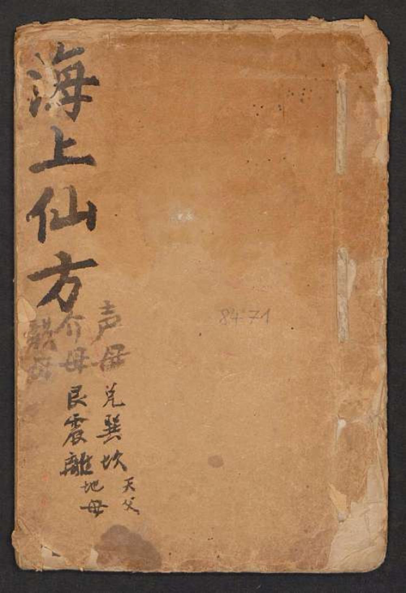
海上仙方
[封面题字，下方小字多列，漫漶难辨]
声[疑:聲]母，兑[疑:兌]、巽、坎；天父。
分[疑:汾]母，民[疑:艮]、震、离[疑:離]；地母。
□母，□□。
[页面中部淡笔字] 84-71
全书封面，仅有书名《海上仙方》及封面下方数列与八卦方位有关的小字题记，无正文方剂。
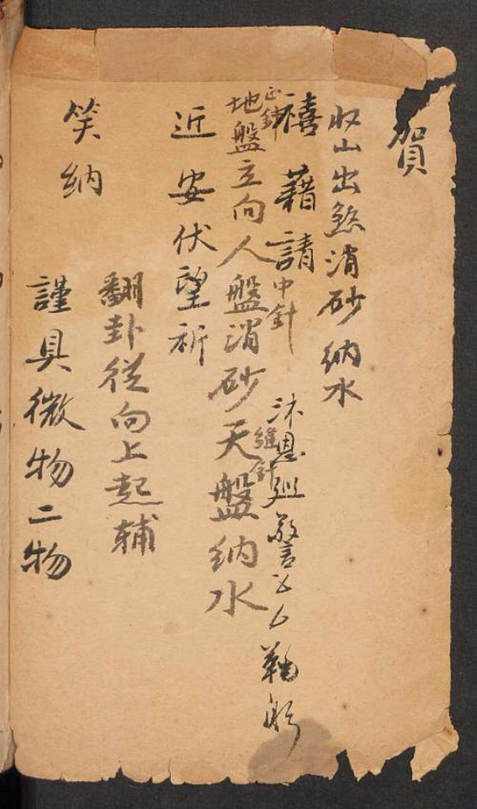
贺[疑:賀]
收山出煞，消砂纳[疑:納]水。
藉[疑:藉]请[疑:請]中针[疑:針]，[小字夹注] 心绣[疑:繡]、地盘[疑:盤]立向、人盘[疑:盤]消砂、天盘[疑:盤]纳[疑:納]水，沐[疑:休]题[疑:題]巡[疑:迎]，□言□□，□新[疑:親]。
近安伏葬[疑:塟]祈。
翻卦从[疑:從]向上起辅[疑:輔]。
谨[疑:謹]具微物二物。
笑纳[疑:納]。
一页风水堪舆题赠短札，讲罗盘三盘（地盘立向、人盘消砂、天盘纳水）、收山出煞、消砂纳水与翻卦起辅等概念，并附谨具微物、笑纳等赠礼套语。
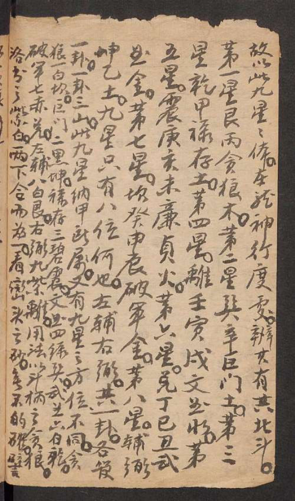
诀[疑:訣]心九星之傍[疑:旁]，本托[疑:託]神衿[疑:襟]度变[疑:變]，□有其北斗。
第一星艮，两[疑:良]贪[疑:貪]狼木；第二星巽，辛巨门[疑:門]土；第三星乾，甲禄[疑:祿]存土；第四星离[疑:離]，壬寅戌文曲水；第五星震，庚亥未廉贞[疑:貞]火；第六星兑[疑:兌]，丁巳丑武曲金；第七星坎，癸申辰破军[疑:軍]金；第八星，辅[疑:輔]弼坐[疑:坤]乙土。
九星只有八位，何也？左辅[疑:輔]右弼，共一卦，各领[疑:領]坤乙土。
一卦一本三山，九星纳[疑:納]甲□，禽[疑:奇]又有九星之方位，不同禽[疑:奇]。狼一白，坎□门[疑:門]；二黑，坤□□；三碧，震□□；文曲四绿[疑:綠]，其武是六白，乾□；破军[疑:軍]七赤，兑[疑:兌]；左辅[疑:輔]八白，艮；右弼九紫，□新[疑:薪]用法，□并[疑:併]柄[疑:秉]主贪[疑:貪]狼。
洛书[疑:書]之紫白，两[疑:兩]下合而为[疑:為]□，看□来[疑:來]之□，多不的确[疑:的確]□□。
风水九星专论：逐一列出九星与八卦、干支、五行的配属（贪狼木、巨门土、禄存土、文曲水、廉贞火、武曲金、破军金及左辅右弼），并解释九星只有八位的原因，以及一白至九紫的洛书紫白配卦。
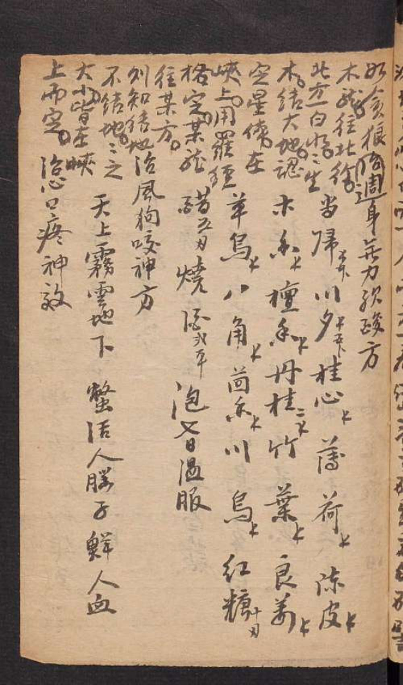
[疑:敗血]根[疑:□]道[疑:導]身无[疑:無]力，歌窍[疑:訣]方
木□往北行，生当[疑:當]归[疑:歸]、川芎、桂心、薄[疑:薄]荷、陈[疑:陳]皮、木□、大□、□生、檀香、丹桂[疑:丹皮]、竹叶[疑:葉]、良姜[疑:薑]、乌[疑:烏]药[疑:藥]、红[疑:紅]糖[疑:□]。
空星傍左□，羊鸟[疑:□]，八角、茴香、川乌[疑:烏]、红[疑:紅]□。
峡[疑:□]上用罢[疑:罷]，强[疑:薑]羊鸟[疑:□]，烧[疑:燒]□□，泡又日温[疑:溫]服。
格[疑:橘]空某[疑:皮]□，往某方。
别[疑:另]知□地法，风[疑:風]枸唤[疑:喚]神方。
天上雾[疑:霧]露地下，□医[疑:醫]人胜[疑:勝]子，鲜[疑:鮮]人血，大小皆在峡[疑:□]，上而空，隐[疑:隱]口疾，神效。
杂抄一页：前半为一则歌诀体方剂，列当归、川芎、桂心、薄荷、陈皮、檀香、竹叶、良姜、乌药、八角、茴香、川乌等药味，后半记温服法及一则唤神、口疾神效的杂法，文字漫漶处较多。
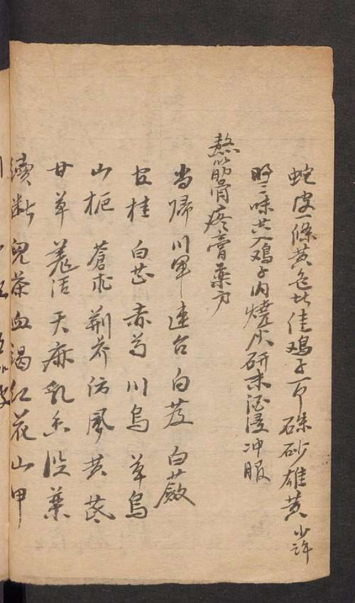
蛇皮一条[疑:條]，黄[疑:黃]色此[疑:雌]佳，鸡[疑:雞]子□□，硃砂、雄黄[疑:黃]、山梓[疑:□]，好酒共□鸡[疑:雞]子肉，烧[疑:燒]灰研末，酒浸冲[疑:沖]服。
热[疑:臨]胎[疑:骨]疼膏药[疑:藥]方
当[疑:當]归[疑:歸]、川军[疑:軍]、连[疑:連]召[疑:翘]、白芷、白蔹[疑:蘞]；
长[疑:肉]桂、白芷、赤芍、川乌[疑:烏]、羊乌[疑:草烏]；
山栀[疑:梔]、苍[疑:蒼]朮、荆[疑:荊]芥、祛风[疑:風]、芙蓉叶[疑:葉]；
甘草、羌活、天麻、乳香、性叶[疑:□葉]。
[页左边缘续字，为下一方之始] 续[疑:續]断[疑:斷]、儿[疑:兒]茶、血竭、红[疑:紅]花、山甲。
两则外治、服食杂方：一则以蛇皮、鸡子、硃砂、雄黄等烧灰研末、酒浸冲服；一则题为骨疼膏药方，列当归、川军、白芷、赤芍、川乌、山栀、苍朮、荆芥、甘草、羌活、天麻、乳香等药味。
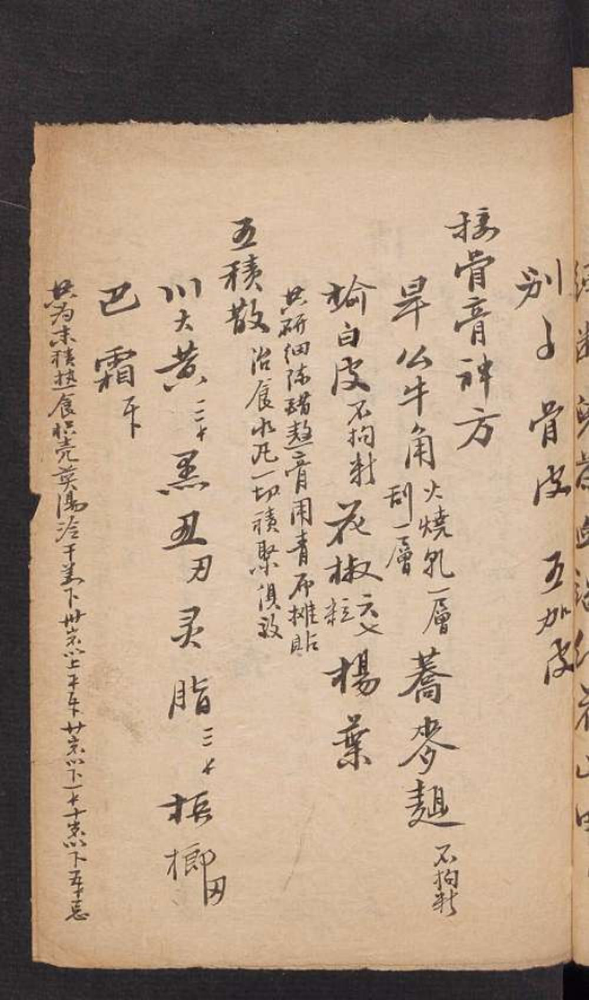
接骨膏神方
旱公牛角，大烧[疑:燒]乳一层[疑:層]，荞[疑:蕎]麦[疑:麥]面[疑:麵]，不拘新[疑:□]。
榆白皮，不拘新，衣椒[疑:花椒]□，杨[疑:楊]叶[疑:葉]。
共研细[疑:細]末，醋调[疑:調]膏，用青布摊[疑:攤]贴[疑:貼]，一切跌打损伤[疑:傷]□改。
五积[疑:積]散，治食水[疑:□]
川大黄[疑:黃]□分，黑丑，刃[疑:□]灵[疑:靈]脂三分，槟[疑:檳]榔□。
巴霜□。
[小字] 共为[疑:為]末，积[疑:積]拉[疑:□]食□菜汤[疑:湯]，□下□，甘草□下，五更[疑:□]□。
两方：一为接骨膏神方，以牛角、荞麦面、榆白皮、花椒、杨叶等研末醋调、青布摊贴，称治跌打损伤；一为五积散，列大黄、黑丑、灵脂、槟榔、巴霜等，记研末送服之法。
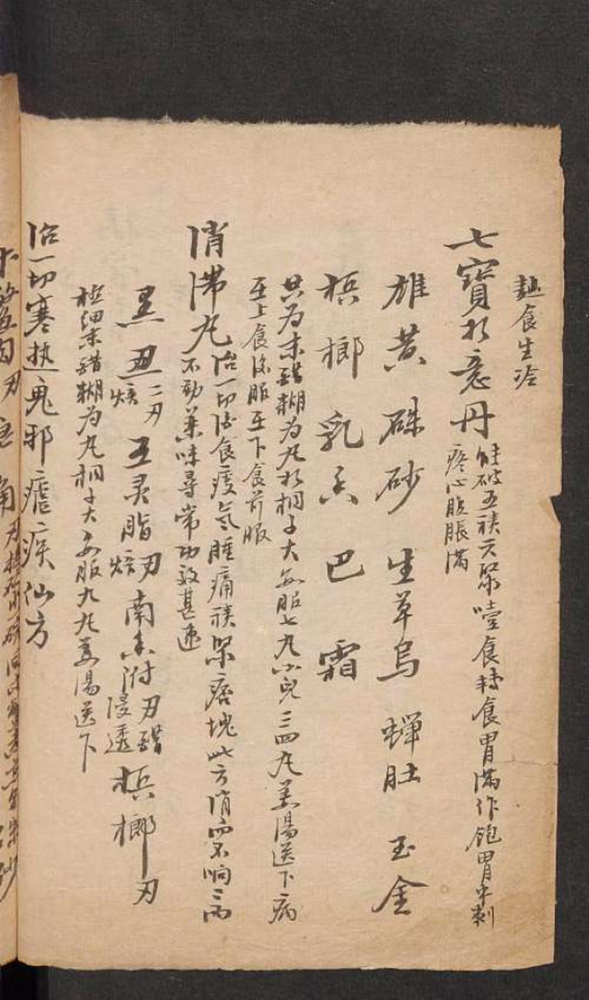
[小字] 热[疑:□]食生冷
七宝[疑:寶]□丹，治心腹胀[疑:脹]满[疑:滿]，痰心[疑:□]□食，□食胃满[疑:滿]，作饱[疑:飽]胃□刺[疑:□]。
雄黄[疑:黃]、硃砂、生草乌[疑:烏]、蝉[疑:蟬]肚[疑:退]、玉金[疑:鬱金]；
槟[疑:檳]榔、乳香、巴霜。
共为[疑:為]末，□糊为[疑:為]丸，桐子大，每服□丸，心宽[疑:寬]三四丸，美[疑:薑]汤[疑:湯]送下，至上食□服，下食前服。
消滞丸，治一切饮食[疑:食]痰气[疑:氣]，肿[疑:腫]痛积[疑:積]聚痰块[疑:塊]，此方顶[疑:□]而[疑:不]响[疑:響]二两[疑:兩]。
黑丑三两[疑:兩]，玉灵[疑:靈]脂□，南□附□丹砂□，槟[疑:檳]榔一两[疑:兩]。
[页左边缘续字] 治一切寒热[疑:熱]鬼邪，疟[疑:瘧]疾仙方，极[疑:極]细[疑:細]末，□糊为[疑:為]丸，桐子大，每服□大丸，姜[疑:薑]汤[疑:湯]送下。
丸剂两方及一方起头：一为七宝丹，列雄黄、硃砂、生草乌、蝉退、郁金、槟榔、乳香、巴霜等，糊丸姜汤送下，题治心腹胀满；一为消滞丸，列黑丑、灵脂、槟榔等，题治饮食痰气、肿痛积聚痰块；页边另起治寒热疟疾仙方。
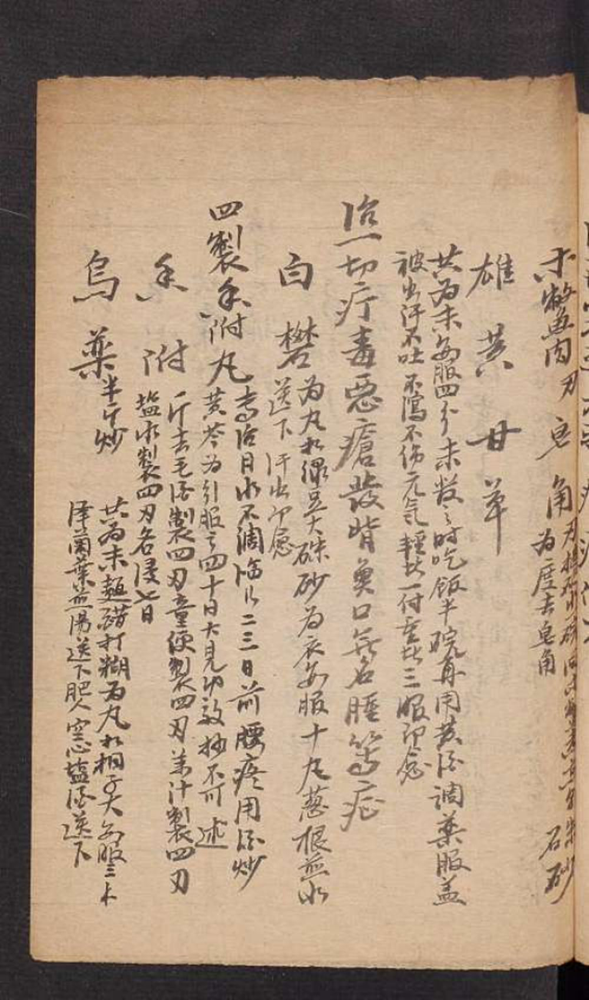
雄黄[疑:黃]、甘草□年[疑:□]。
共为[疑:為]末，每服四分，末[疑:□]时[疑:時]吃[疑:喫]饭[疑:飯]半碗[疑:椀]，□肉□，调[疑:調]药[疑:藥]服，盖[疑:蓋]被出汗，不吐不泻[疑:瀉]，不伤[疑:傷]元气[疑:氣]，轻[疑:輕]者一付，重者三服即愈。
治一切疔毒恶[疑:惡]疮[疑:瘡]，发[疑:發]背，臭口□，名曰腰带[疑:帶]疔
白蔹[疑:蘞]，送下，汗出即愈。
□为[疑:為]丸，□豆大，硃砂为[疑:為]衣，每服十丸，葱[疑:蔥]根煎水送下。
四制[疑:製]香附丸
香附，□□日晒[疑:曬]不润[疑:□]，临[疑:□]二三日前，腰疼用□炒。
一斤，姜[疑:薑]汁制[疑:製]四两[疑:兩]；醋制[疑:製]四两[疑:兩]；盐[疑:鹽]水制[疑:製]四两[疑:兩]；姜[疑:薑]汁制[疑:製]四两[疑:兩]，各浸七日。
乌[疑:烏]药[疑:藥]半斤炒。
[小字] 共为[疑:為]末，醋打糊为[疑:為]丸，桐子大，每服三十丸，□茶□，盐[疑:鹽]汤[疑:湯]送下，肥人宜盐[疑:鹽]汤[疑:湯]送下。
三段：一为雄黄、甘草研末调服、盖被出汗之法；一为治疔毒恶疮、发背、腰带疔方，丸药以葱根煎水送下；一为四制香附丸，记香附以姜汁、醋、盐水等分制、各浸七日，配乌药研末醋糊为丸的制法。
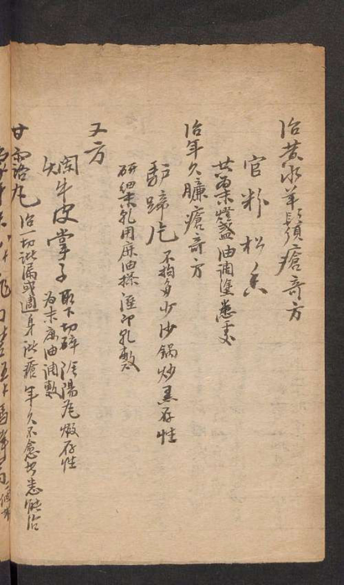
治黄[疑:黃]水□羊[疑:□]头[疑:頭]疮[疑:瘡]奇方
官粉、松香。
共为[疑:為]末，□□油调[疑:調]涂[疑:塗]患处[疑:處]。
治年久臁疮[疑:瘡]奇方
□粉片，不拘多少，锅[疑:鍋]炒黑存性，研细[疑:細]末，乳用麻油□，涂[疑:塗]□乳敷[疑:□]。
子方
□牛皮掌[疑:□]子，取□□碎，冷汤[疑:湯]老[疑:□]煨存性，为[疑:為]末，麻油调[疑:調]敷[疑:□]，治一切□属[疑:□]□真[疑:□]疮[疑:瘡]，年久不愈者，甚效[疑:□]。
[页左边缘续字] 甘露丸，治一切淋□□。
外治疮方三则：一治黄水疮、头疮，以官粉、松香研末油调涂患处；一治年久臁疮，以粉片炒黑存性、研末麻油调敷；一子方以牛皮某物煨存性、麻油调敷，题治年久不愈之疮；页边另起甘露丸治淋。
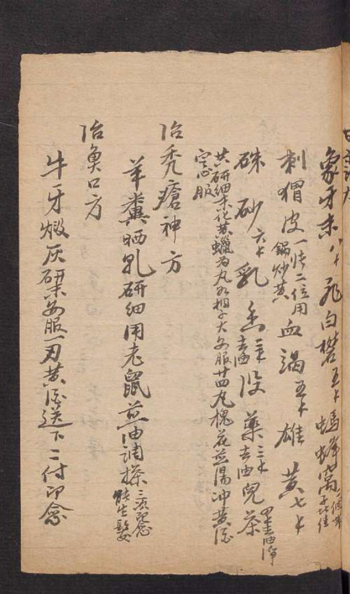
[右缘残字，接上页] □牙末，□□，凡白[疑:礬]至下，螞[疑:蟻]窩[疑:瘡]子[疑:洗]。
刺猬皮一[疑:張]，[疑:鍋]炒，[疑:共]用。血竭五分，雄黄七分，硃砂六分，乳[疑:香]五分，[疑:茶]末[疑:沒]藥三錢，茶[疑:末]由[疑:油]兒茶[疑:四錢，淨]。
共研細末，化黃蠟為丸，如梧子大。每服廿四丸，槐花蒸湯沖黃酒，空心服。
治禿瘡神方
羊糞晒[疑:乾]，研細，用老鼠[疑:油]調搽，三次即愈。[小字] 夥[疑:野]生髮。
治臭口方
牛牙[疑:煅]灰，研末服一兩，黃酒送下，二付即愈。
本页承接上页一外用方残文，主体收三方：以刺猬皮、血竭、雄黄、硃砂等研末蜡丸内服之方，治秃疮神方（羊粪研细以鼠油调搽），以及治臭口方（牛牙煅灰、黄酒送服）。
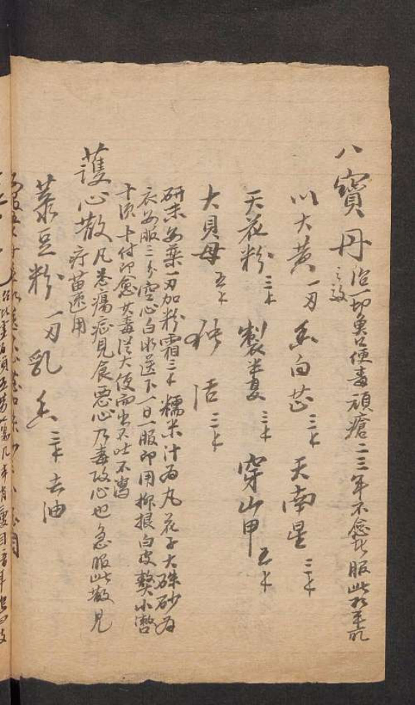
八寶丹
治一切[疑:癰疽]、頑瘡二三年不愈者，服此即全愈。
川大黃一兩，五[疑:?]白芷三錢，天南星三錢，天花粉三錢，製半夏三錢，穿山甲二錢，大貝母五錢，[疑:皂角]三錢。
研末。每藥一兩，加冰片霜三錢，糯米汁為丸，丸如大珠，砂為衣。每服三錢，空心白水送下，一日一服。中用[疑:梔]根、白皮、藜[疑:蘆]、小[疑:薊]，十[疑:日]付即愈。食[疑:後]必大便而出，此不為瀉，凡瘡瘍初見食慾乃毒攻心也，急服此散尤。
護心散
黃豆粉一兩，乳香三錢，去油。
本页主方为八宝丹，称治久年不愈顽疮，药列大黄、白芷、天南星、天花粉、半夏、穿山甲、贝母等，研末以糯米汁为丸；页末另起护心散，仅列黄豆粉、乳香二味，后文接下页。
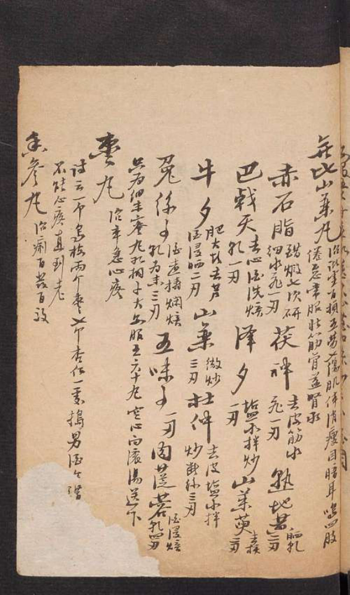
奔[疑:奔]此山藥丸
[小字] 治[疑:腎]虛、五勞、[疑:癰]腫、目暗、耳鳴、心腹疼痛，滋補腎水，壯[疑:筋]骨，宜腎水。
赤石脂，鍋[疑:煅]更次研，茯苓，去皮，筋[疑:淨]，熟地黃，曬[疑:乾]，乳[疑:汁拌]。巴戟天，去心，鹽水焙。澤瀉一兩，鹽水拌炒。山藥，薑汁拌。牛夕，肥大者，去蘆，山藥，微炒。杜仲，去皮，鹽水拌炒，斷絲。三兩。五味子一兩。肉蓯蓉，乳[疑:浸]。
菟絲子，酒浸，搗爛，焙。五[疑:味]子一兩。
棗丸，治[疑:虛]意[疑:淋]疼。
[小字] 詩云：一年喬板兩年棗，七年杏仁一棗。搗易[疑:爛]，七[疑:遍]，不[疑:住]心疼，直[疑:到]老。
東[疑:冬]葵丸，治痢百藥百效。
本页先列一味护心散的延续（接上页），主体为山药丸类补肾方，药列赤石脂、茯苓、熟地黄、巴戟天、泽泻、山药、牛膝、杜仲、五味子、肉苁蓉、菟丝子等，并附枣丸及冬葵丸方名，属滋补与治痢主题。
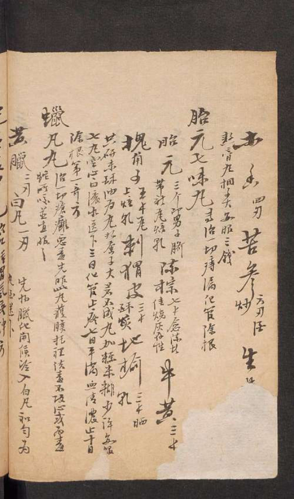
[方名，字大而草] □□，四兩，[疑:黃]芩[疑:末]，五分，[疑:生]一[疑:錢]。
胎元五味丸
主治一切痔漏、化痰降根。
胎元，[疑:三箇]，[疑:切]，男[疑:子]臍，陳[疑:米]七十[疑:粒]，洗，[疑:焙]燥，各性半黃三錢。帶放，麂[疑:臍]，乳[疑:汁]。
槐角子，上[疑:等]，乳[疑:汁]，刺猬皮三錢，研[疑:末]，地榆一兩，乳[疑:汁]。
共研末，研[疑:細]，為丸，如[疑:梧]子大。若為散，丸加輕[疑:粉]，糊少許。每服七丸，空心白湯水送下，三日後，管上疼七日，半[疑:月]，血痔、膿止，十日後，根第一奇方。
蠟丸
治一切痔漏，痔瘡，先[疑:服]丸護膜，托[疑:裡]法，蓋石[疑:灰]即成，亦[疑:為]盡。
黃臘三兩，白凡一兩。
[小字] 先化臘，後入凡，攪勻為[疑:丸]。
本页以痔漏为主题：胎元五味丸称主治痔漏，药及槐角子、刺猬皮、地榆等，研末为丸、空心送服，并详记服后反应日程；页末另列黄蜡、白矾组成的蜡丸，亦为痔漏而设。
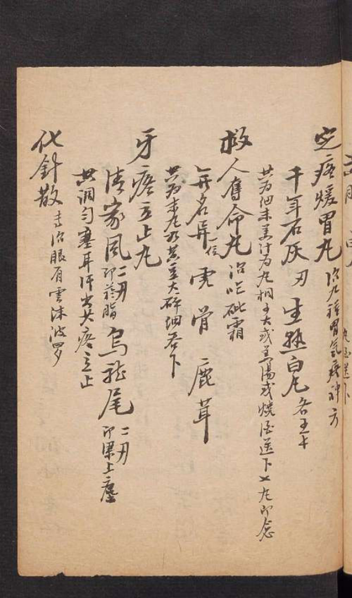
空[疑:痔]痔[疑:瘡]胃丸
治九[疑:種]胃氣疼痛方。
千年石灰一刃，生[疑:薑]，白凡，各五錢。
共為細末，黃酒為丸，桐子大，或蒸湯送下，一丸即愈。
救人奪命丸
治[疑:中]砒霜。
每名[疑:丹]一粒，寒[疑:水]，骨[疑:末]，鹿茸。
[小字] 共為末，丸如[疑:梧]子大，碎，細吞下。
牙疼立止丸
陳家風[疑:門]，[疑:二]胡[疑:椒]，烏[疑:梅]尾二兩，[疑:研]末，上疼[疑:處]。
共調勻，塞耳內，左疼立止。
代針散
去[疑:腐]，服有[疑:膿]，沫[疑:沒]多。
本页杂方四则：胃气疼痛方（千年石灰等为丸）、救人夺命丸（称解砒霜毒，含鹿茸等）、牙疼立止丸（塞耳用法）及代针散（去腐排脓），多为急症与外科用途。
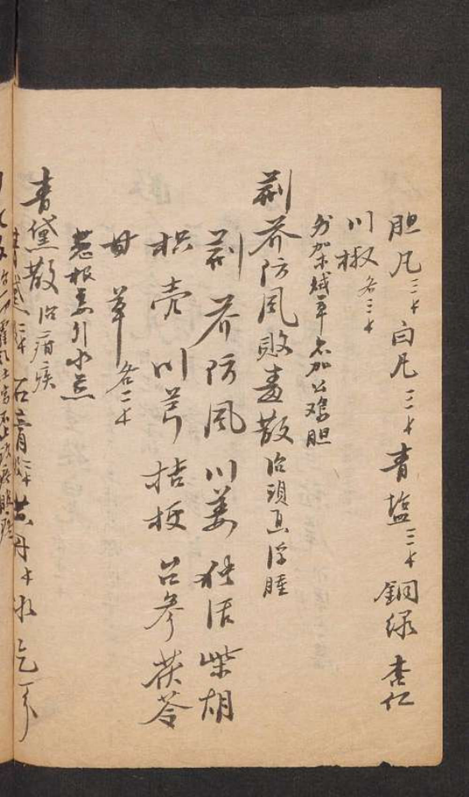
膽凡三錢，白凡三錢，青鹽三錢，銅綠，青[疑:紅]。
川椒，各三錢。
[小字] 分加茶，[疑:絨]年，太加[疑:此]，鵝膽。
荊芥防風散
治頭風、[疑:牙]腫。
荊芥，防風，川芎，[疑:桔梗]，[疑:柴]胡，根殼，川芎，桔梗，[疑:白]芷，茯苓，甘草，各二錢。
[小字] 薑根，薑引，水煎。
青黛散
治[疑:扁]喉[疑:症]。
本页先列胆矾、白矾、青盐、铜绿、川椒等研散的一方（方名在页首承上页），主体为荆芥防风散，治头风牙肿，药列荆芥、防风、川芎、桔梗、柴胡、白芷、茯苓、甘草等；页末起青黛散，治喉症，方文接下文。
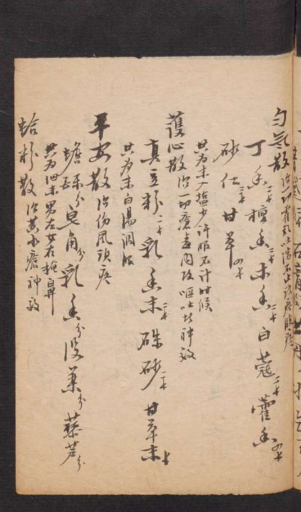
白[疑:芷]散
治[疑:中]青[疑:風]，[疑:痰]迷不醒，及[疑:癲癇]。
丁香二錢，檀香，末香二錢，白[疑:芷]，蔻[疑:仁]三錢，砂仁二錢，甘草四錢。
護心散
治一切瘡毒，內攻，嘔吐，[疑:此]神效。
[小字] 共為末，一錢，[疑:鹽]水，許[疑:服]，石汁[疑:時]候。
真豆[疑:粉]二錢，乳香末，硃砂末，甘草末。
共為末，白湯調服。
平安散
治傷風頭疼。
[疑:雄]黃，[疑:末]分，皂角，乳香末，分，[疑:麝]，麝[疑:香]，分，[疑:硃]砂，分，茶[疑:末]，分。
[小字] 無為[疑:法]，四末，男左女右，搐鼻[疑:嚏]。
蛤粉散
治黃水瘡，神效。
本页散剂四则：白芷散类治风痰昏迷，护心散治疮毒内攻呕吐（真豆粉、乳香、朱砂、甘草），平安散治伤风头疼、以搐鼻取嚏用法，页末起蛤粉散治黄水疮。
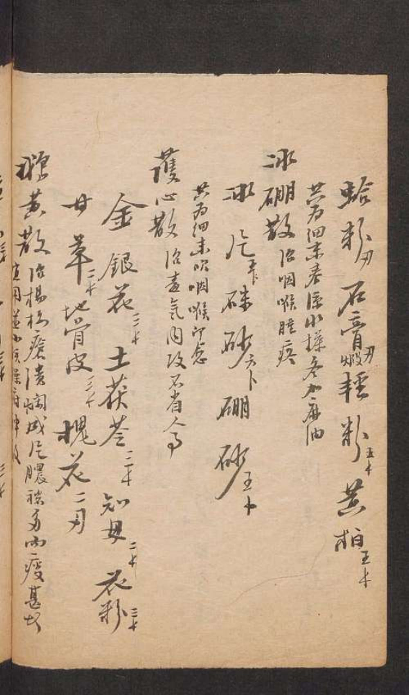
蛤粉[疑:散]
石膏，[疑:煅]，輕粉，五分，[疑:燕]柏五分。
共為細末，香油調，搽[疑:患]處，每日[疑:換]。
冰硼散
治咽喉腫疼。
冰片末，硃砂六分，硼砂五分。
護心散
治瘡毒內攻，不省人事。
[小字] 共為細末，吹咽喉[疑:即]愈。
金銀花三錢，土茯苓三錢，知母三錢，花粉三錢，甘草二錢，地骨皮三錢，槐花二兩。
[疑:瘡]黃散
治楊梅瘡，[疑:癰]毒，[疑:爛]，或[疑:屁]，腰痛，多而瘦，甚妙。
[小字] 直月[疑:日]，西[疑:瓜]，[疑:霜]。
本页承上页蛤粉散（石膏、轻粉等香油调搽），主体为冰硼散治咽喉肿疼（冰片、朱砂、硼砂），及又一护心散（金银花、土茯苓、知母、花粉、甘草、地骨皮、槐花），页末起治杨梅疮等症的疮黄散。
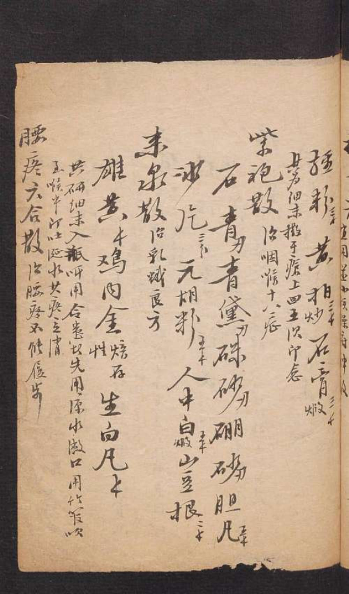
[疑:極]粉[疑:散]，黃柏三錢，炒，石膏，[疑:煅]三錢。
共為細末，撒子[疑:瘡]上，四五[疑:日]即愈。
紫袍散
治咽喉十八症。
石青，青黛，硃砂，硼砂，明[疑:礬]，膽凡一錢，冰片三[疑:分]，元[疑:明]粉一錢半，人中白，[疑:煅]，山豆根三錢。
朱[疑:砂]散
治乳蛾良方。
雄黃，雞內金，性[疑:焙]，石[疑:膏]，生白凡一錢。
共研細末，入瓶內，用[疑:時]，先用涼水漱口，用竹管吹，玉[疑:喉]，半[疑:日]，[疑:涎]水，次[疑:日]愈，全清。
腰[疑:疼]六合散
治腰疼，又[疑:治]腰[疑:痛]。
本页先承上页一散剂（黄柏、石膏研末撒疮），主体为紫袍散治咽喉十八症，药列石青、青黛、朱砂、硼砂、胆矾、冰片、元明粉、人中白、山豆根等；另有朱砂散类治乳蛾方（吹喉用法）及页末腰疼六合散。
---
转录者注：本批各页均为行草连笔加大量小字夹注，药名与剂量大字部分相对可辨，小字服法、引子多处仅能得大意，已以 [疑:] 标出；第13页方名、第10页右缘残字、第12页方名首字等处辨认最难，未作臆补。
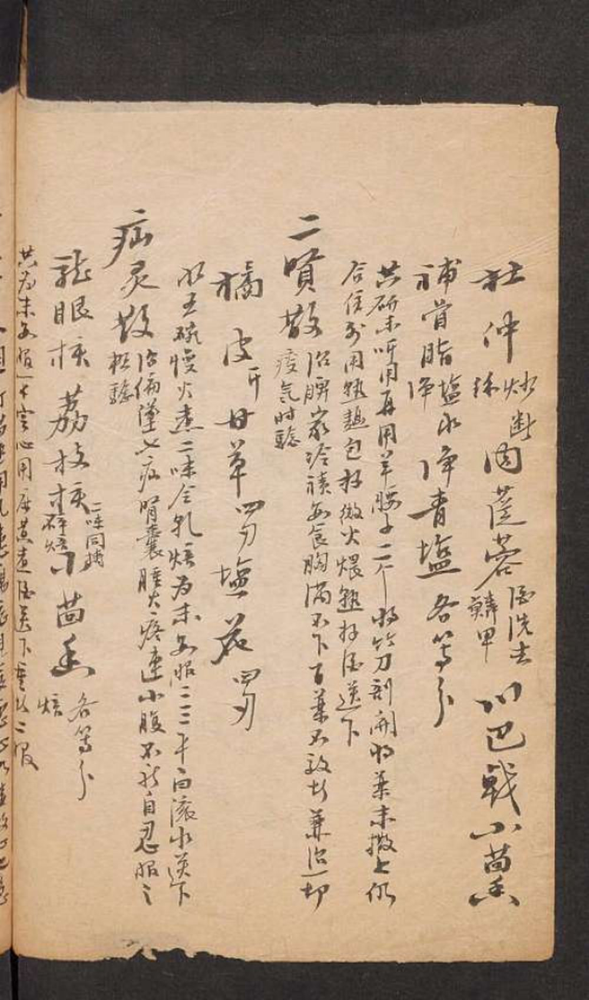
杜仲，炒断丝；肉苁蓉，酒洗去 [疑:鳞甲]；川巴戟；小茴香。
补骨脂，盐水净；青盐，各等分。
共研末，听用。在用羊腰子二个，剖开，去筋膜，药末撒上，以线扎住，用盐泥包好，微火煨熟，打碎，送下。
二贤散：治脾家冷，痰饮停，胸膈不下，百药不效，此药兼治一切。
橘皮（去白）半斤，盐四两。
甘草四两，炙，[疑:为末]。
右去疏，慢火煮三味，令乳糖为末。每服三钱，白滚水点下。或去疏，临睡逢之，在胃囊，腰火疼痛，小腹不快，自忍服之。
病灵散：治腰膝 [疑:酸痛]。
荔枝核，烧存性，[疑:二两同地]；茴香，各等分。
[页左边缘小字，残缺] 此方未必 [疑:信]，不可 [疑:妄用]，每每虚者，此医下 [疑:笔以二服]。
本页续一首以杜仲、肉苁蓉、巴戟、补骨脂等为主的补益方（方名在前页），后录「二贤散」（橘皮、盐、甘草）治脾冷痰饮胸膈不舒，又录「病灵散」[疑:方名]（荔枝核、茴香）治腰膝。页边有后人对一方疗效存疑的批注。
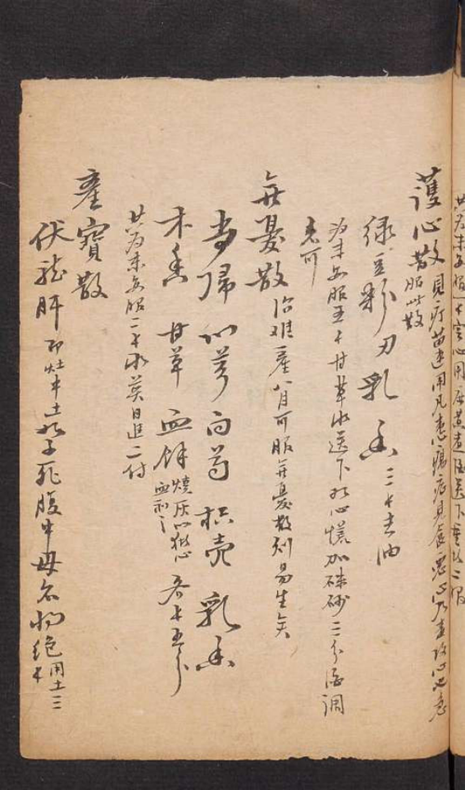
[页右边缘小字，承前页] 谨心散，见所留连，用凡意之类，病具虚之恶，不分重，改以心意。
护心散，治心脏。
绿豆粉一两，乳香三钱，朱砂。
为末。每服五分，甘草水送下。灯心、慌加硃砂三钱，临调末，可。
安神散：治眼产一月可服，并安神，利易生气。
当归一两，芍药一两，白芷一两，槟榔一两，乳香。
木香，甘草，血余（烧灰，一钱），[疑:棕心]，香末五分。
共为末。每服三钱，水煎，日进二付。
枣宝散：
伏龙肝，即灶心土，五钱；飞，腹中母名，抱用土三 [疑:钱]。
本页录「护心散」（绿豆粉、乳香、朱砂等）、「安神散」（当归、芍药、白芷、槟榔、乳香、木香、甘草、血余等，称产后一月可服）、「枣宝散」[疑:方名]（伏龙肝即灶心土）等方，主题偏心神、产后调理。
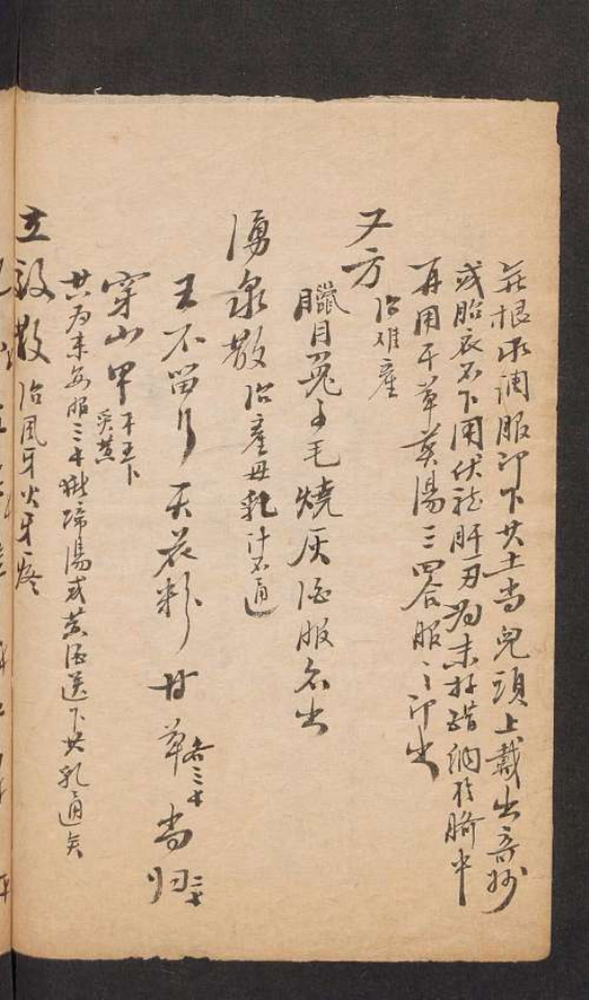
共根据水调，服即下。欠上者，完头上戴出，高抄。
或胎衣不下，用伏龙肝五钱，末，井花水调，竹沥半盏，再用干姜、姜汤三四合服之，即出。
又方：治难产。
腊月兔子毛，烧灰，酒服，衣出。
伤寒散：治产母乳汁不通。
王不留行，不拘多少；甘草三钱；当归三钱。
穿山甲，干姜。
共为末。每服三钱，猪蹄汤或热酒送下，次乳通矣。
立效散：治风牙、火牙疼。
本页上半续前页伏龙肝方，及胎衣不下、难产（腊月兔毛烧灰酒服）二法；中录「伤寒散」[疑:方名待核]治产母乳汁不通，药用王不留行、甘草、当归、穿山甲、干姜，以猪蹄汤或热酒送下；页末起「立效散」治风牙、火牙疼，方药在下页。
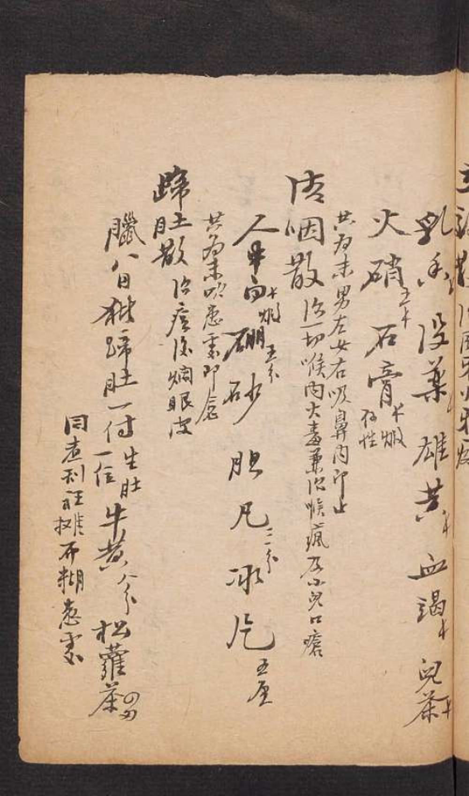
[承前页，页右残列] 乳香，没药，雄黄，血竭，儿茶。
火硝二钱，石膏（煅，研性）。
共为末。男左女右，吹鼻内，即止。
治牙散：治一切喉肉大毒，兼治喉疯，及小儿口疳。
人中白（煅）硼砂，冰片二分五厘。
共为末。吹患处，即愈。
蟀肚散 [疑:方名]：治产后痢，服此。
腊八日，猪蹄肚一付，生肚；牛黄八分；松萝茶 [疑:二两]。
同志利，肚挖开，糊患处。
本页先续「立效散」余药（乳香、没药、雄黄、血竭、儿茶、火硝、石膏，吹鼻）；次「治牙散」[疑:或治喉散]（人中白、硼砂、冰片，吹患处）治喉肉大毒、喉疯、小儿口疳；末录一首治产后痢的猪肚方（腊八日猪肚、牛黄、松萝茶）。
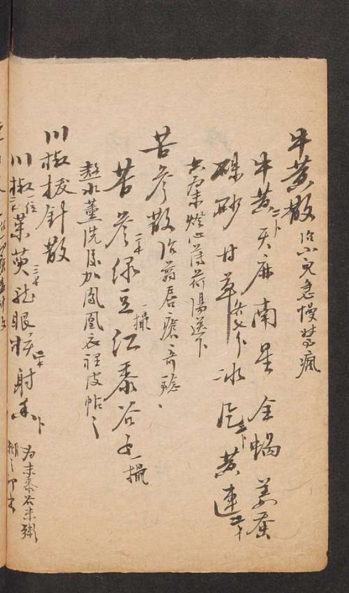
牛黄散：治心窍急慢惊风。
牛黄二分，天麻，南星，全蝎，黄连半 [疑:两]。
硃砂，甘草（各一分），冰片一分，黄连半 [疑:两]。
去者，烘心，詹前汤送下。
苍参散：治翁唇，瘰疬等症。
苍参一两，僵蚕，红花，谷精草一撮。
熬水，姜洗，加凤凰衣，程度贴之。
川椒散：
川椒（去目），吴茱萸，蛇床子，射干一两。
为末，茶洗，淋 [疑:之]。
本页录「牛黄散」（牛黄、天麻、南星、全蝎、黄连、朱砂、甘草、冰片）治小儿急慢惊风；「苍参散」[疑:方名]（苍参、僵蚕、红花、谷精草等，熬水洗、加凤凰衣贴）治瘰疬类症；「川椒散」（川椒、吴茱萸、蛇床子、射干）为末外洗。
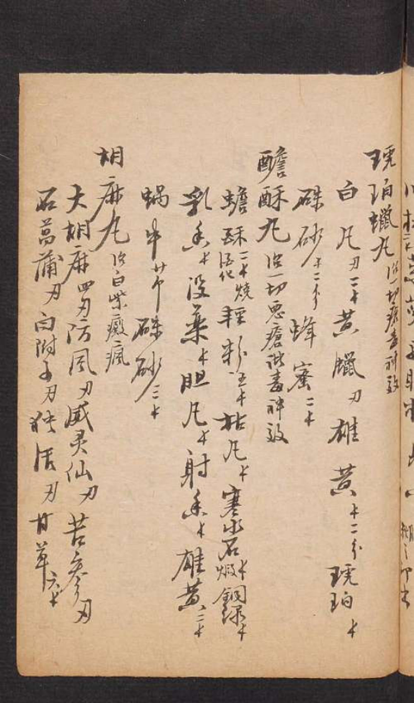
琥珀蠟丸：治世产，诸淋，沙 [疑:淋]。
白芷三钱，黄柏，桃仁一钱二分，琥珀一钱。
硃砂三钱，蜂窠二钱。
蠶酥丸 [疑:方名]：治一切恶疮，诸毒，神效。
蟾酥（浸化，耗 [疑:一两]）一两，槟榔一钱，寒水石（煅）一钱，铜绿一钱，乳香一钱，没药一钱，胆矾一钱，射香一钱，雄黄三钱。
蜈蚣半个，硃砂三钱。
相麻丸 [疑:方名]：治白浊，疯疯。
大枫麻四两，防风四两，威灵仙四两，苦参四两，五加皮四两，白附子四两，独活四两，甘草各 [疑:等分]。
本页录丸方三首：「琥珀蠟丸」（白芷、黄柏、桃仁、琥珀、朱砂、蜂窠）治诸淋；一首蟾酥为主的丸方治一切恶疮诸毒（配槟榔、寒水石、铜绿、乳香、没药、胆矾、麝香、雄黄、蜈蚣、朱砂）；一首大枫子、防风、威灵仙、苦参等组成的丸方治白浊、风症。
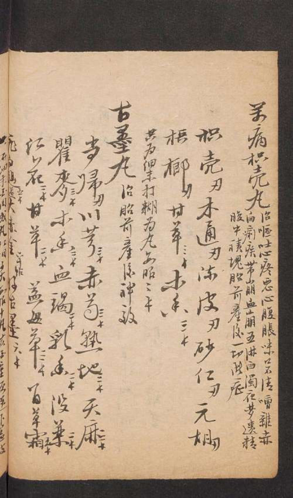
万病枳壳丸：治呕吐疼，急心腹胀，疼不可忍，嘈杂，吞酸，痢疾，草 [疑:积] 血，痢血，淋白浊，花草，凌搭，腹中痞块，胸前气痞，一切皆应。
枳壳四两，木通四两，陈皮四两，砂仁四两，元胡四两，槟榔四两，甘草三钱，木香三钱。
共为细末，打糊为丸，如梧桐子大。服二钱。
古墨丸：治胎前产后，诸神效。
当归四两，川芎三钱，赤芍三钱，熟地三钱，天麻三钱，瞿麦三钱，木香，血竭，乳香，没药，红花三钱，甘草三钱，藁本三钱，百草霜三钱。
本页录「万病枳壳丸」（枳壳、木通、陈皮、砂仁、元胡、槟榔、甘草、木香，糊丸）治呕吐、心腹胀疼、吞酸、痢疾、淋浊、痞块等广谱症；又录「古墨丸」（当归、川芎、赤芍、熟地、天麻、瞿麦、木香、血竭、乳香、没药、红花、甘草、藁本、百草霜）治胎前产后诸症。
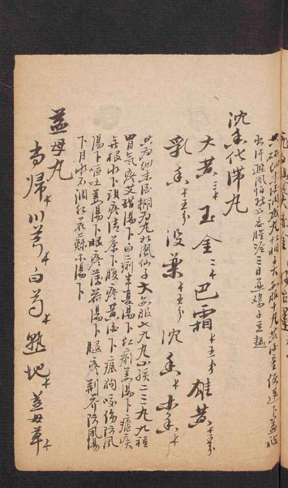
[页右小字，承前] 硃砂、木香、沉香、枳壳、九蒸 [疑:九香]，十九般上盖，临 [疑:服]。
右件，避风，柏子，忘腔，冷三日，益处子至热。
沈香代脾丸 [疑:沉香代脾丸]：
大黄三钱，玉金二钱，巴霜一钱五分，雄黄一钱五分，乳香一钱五分，没药一钱五分，沉香一钱，木香一钱。
此为细末，醋糊为丸，如凤仙子大。每服又丸、九丸、九粒。胃气疼，姜汤下；白痢，米汤下；红痢，姜汤下，痢疾；中风，下痰，姜汤下；腰疼，盐汤下；腹疼，黄汤下；腿疼，荆芥汤下；防风汤下；月中不知，润红花三钱，水汤下。
益母丸：
当归四两，川芎四两，白芍四两，熟地四两，益母草四两。
本页先有承前页的小字服法注（避风、三日等，字迹最潦草难辨）；次录「沉香代脾丸」[疑:方名]（大黄、郁金、巴豆霜、雄黄、乳香、没药、沉香、木香，醋糊丸），并详列按症选汤送服之法（姜汤、米汤、盐汤、黄酒汤、荆芥汤、防风汤、红花汤等）；末起「益母丸」（当归、川芎、白芍、熟地、益母草）。
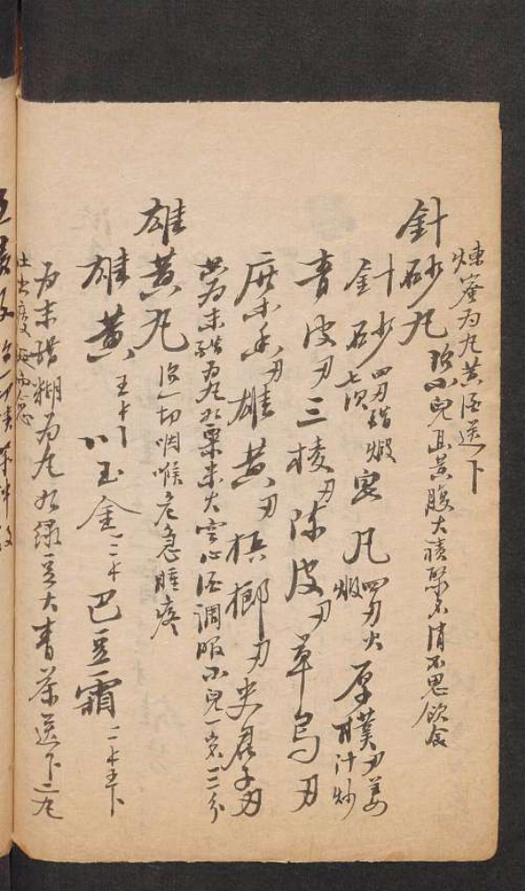
炼蜜为丸，临产送下。
针砂丸：治一究，虫积，腹大，诸气，月闭，不思饮食。
针砂四两，醋煅，凡 [疑:煅] 四次，厚朴四两，姜汁炒，青皮四两，三棱四两，陈皮四两，莪术四两，干姜四两，茯苓 [疑:四两]，雄黄四两，槟榔四两，麦芽四两。
若未破，丸如绿豆大，空心温酒服，一见一究二三个。
雄黄丸：治一切痟喉，急急，腰疼。
雄黄五钱一分，玉金二钱，巴豆霜二钱五分。
为末，猪糊为丸，如绿豆大。诸茶送下一丸。
本页首行「炼蜜为丸，临产送下」为前页益母丸的制法收尾；次录「针砂丸」（针砂醋煅、厚朴、青皮、三棱、陈皮、莪术、干姜、雄黄、槟榔、麦芽等）治虫积腹大、诸气、月闭、不思饮食；末录「雄黄丸」（雄黄、郁金、巴豆霜）治喉症、腰疼等。
---
## 转录存疑总注
- 本批为同一医方抄本的连续丸散方，药名多用行草简笔与俗写（如硃砂即朱砂、射香即麝香、玉金疑即郁金、元胡即延胡索），转录时保留原字面，括注仅在提要中酌用通名。
- 剂量小字（一钱、二分、五厘、四两等）多可辨，个别与药名连笔处已标 [疑:]。
- 第19页左缘、第20页右缘、第26页右缘有跨页小字批注/服法，纸边残缺，辨认最不可靠，已在原文中注明残缺。
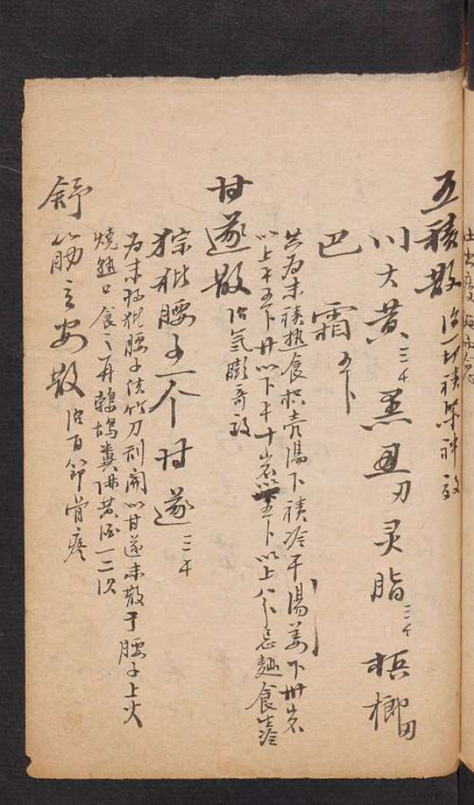
五積散
[疑:治一切積年所致]
川大黃三錢，黑丑、[疑:五]灵脂三錢，檳榔、巴霜□□。
若為末，積熱食□，青湯下；積冷，干腸姜下；[疑:卅]□□，心上□□下；丹心下半，十□□□□下；上□下，忿熱食□□。
甘遂散，治氣[疑:離奇]□。
搽桃腰子一个，甘遂三錢。
為末，搽桃腰子，後以竹刀刮開，心甘遂末，敷于腰子上，火燒熱，□食之，再熱，搗爛，[疑:兩]其[疑:後]一二次。
舒[疑:筋]□□散，治百[疑:節]骨疼。
本页记两方：五积散（川大黄、黑丑、五灵脂、槟榔、巴豆霜等）及甘遂散，另起舒筋类散剂治骨节疼痛。剂量、服法随积热、积冷而异。
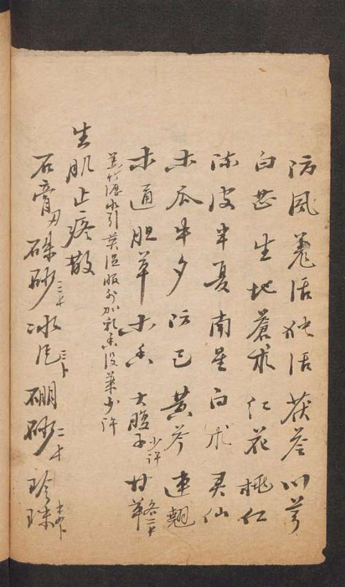
防風、羌活、独活、荊芥、川芎、白芷、生地、蒼朮、[疑:仁]花、桃紅、陳皮、半夏、南星、白朮、灵仙、木瓜、半夕、防已、黃芩、連翹、木通、肥草、木瓜、大腹子[疑:少許]、甘草[疑:下]。
[疑:美於]海水引，姜[疑:溫]服，分加乳香、没藥少許。
生肌止疼散
石膏[疑:刃]、硃砂三錢，水[疑:飛]、硼砂二錢、珍珠□。
本页上半为一首祛风活血、化痰通络的大方，药味众多，姜汤送服、加乳香没药；下半为外用生肌止疼散，含石膏、朱砂、硼砂、珍珠等。
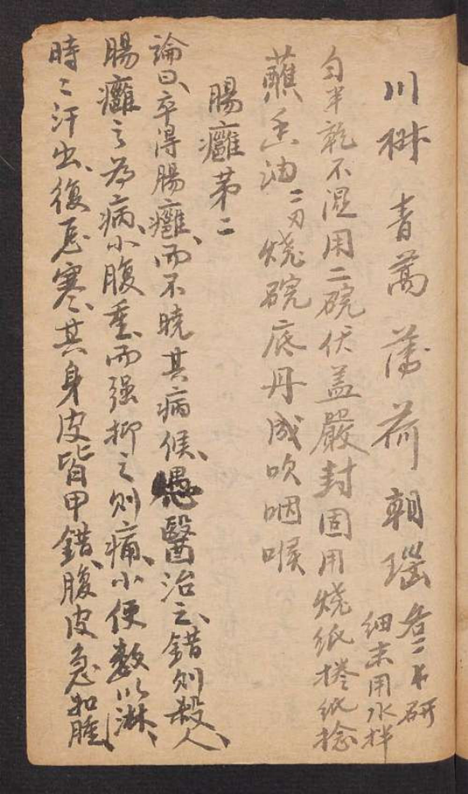
川楝、青蒿、藿香、荆芥穗，各二本，研細末，用水拌匀，半乾不濕，用二碗伏蓋，嚴封固，用燒紙捲紙捻，蘸香油二分，燒碗底，丹成，吹咽喉。
腸癰第二
論曰：卒得腸癰，而不曉其病候，愚醫治之，錯則殺人。腸癰之為病，小腹重而强抑之則痛，小便數似淋，時時汗出，復惡寒，其身皮皆甲錯，腹皮急如腫。
本页先记一法：川楝子、青蒿、藿香、荆芥穗研末隔碗烧制、吹咽喉；后起《肠痈第二》，论肠痈病候：小腹重痛、小便频数、汗出恶寒、腹皮甲错而急。
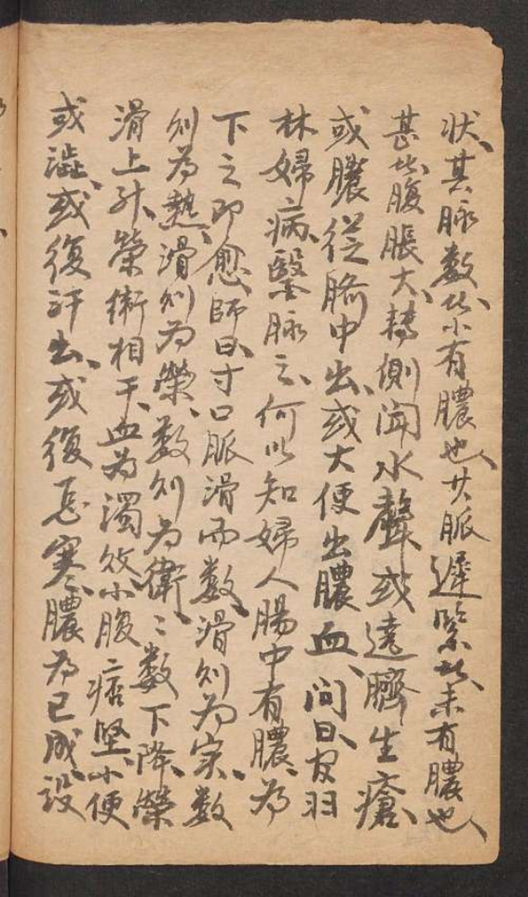
狀，其脈數似小，有膿也；洪脈遲緊，[疑:加]未有膿也；甚則腹脹大，轉側聞水聲，或遠癖生瘡，或膿從臍中出，或大便出膿血。問曰：皮羽林婦病，鑒脈之何以知婦人腸中有膿？為下之即愈。師曰：寸口脈滑而數，滑則為實，數則為熱；滑則為榮，數則為衛；衛數下降，榮滑上升，榮衛相干，血為濁，飲小腹[疑:痙]堅；小便或澀，或復汗出，或復惡寒，膿為已成，設□。
承上页续论肠痈脉象与成脓判断：脉数、迟紧、滑数所主不同，并以问答形式说明妇人肠中脓的脉诊与下法。
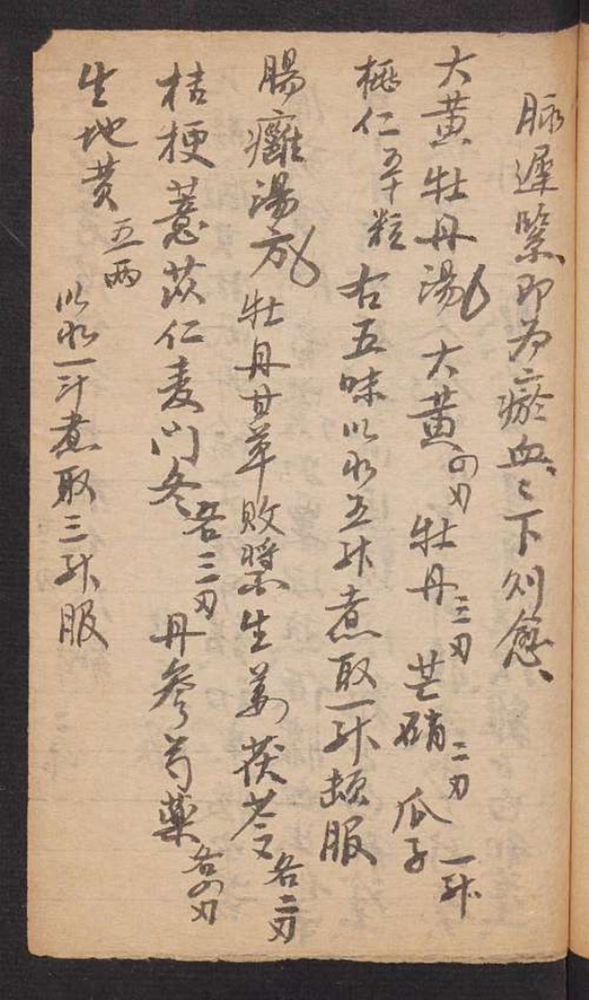
脈遲緊，即為瘀血，血下則愈。
大黃牡丹湯
大黃[疑:四]刃，牡丹三刃，芒硝二刃，一升，桃仁五十粒，右五味，以水五升，煮取一升，頓服。
腸癰湯方
牡丹、甘草、敗醬、生薑、茯苓各二兩，桔梗、薏苡仁、麦門冬各三刃，丹參、芍藥各[疑:四]刃，生地黃五兩，以水一斗，煮取三升，服。
本页给出肠痈两首正方：大黄牡丹汤（大黄、牡丹、芒硝、桃仁等，顿服）与肠痈汤方（牡丹、甘草、败酱、生姜、茯苓、桔梗、薏苡仁、麦冬、丹参、芍药、生地黄）。
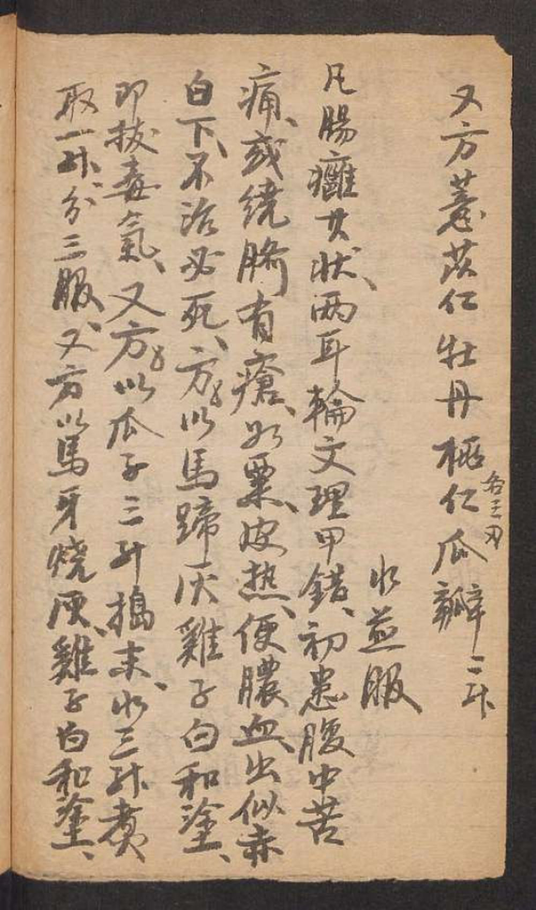
又方：薏苡仁、牡丹、桃仁、瓜瓣，各三刃，[疑:瓣]二升，水煎服。
凡腸癰，其狀兩耳輪文理甲錯，初患腹中苦痛，或繞臍有瘡，如粟皮熱，便膿血出，似赤白下，不流利死。一方以馬蹄灰、雞子白和塗，即拔毒氣。又方以瓜子三升，搗末，水三升，煮取一升，分三服。又方以馬牙皂莢灰、雞子白和塗。
本页续肠痈：一方为薏苡仁、牡丹、桃仁、瓜瓣煎服；并述肠痈外候（耳轮甲错、绕脐生疮、便脓血），附马蹄灰调鸡子白外涂、瓜子煎、皂荚灰外涂等法。
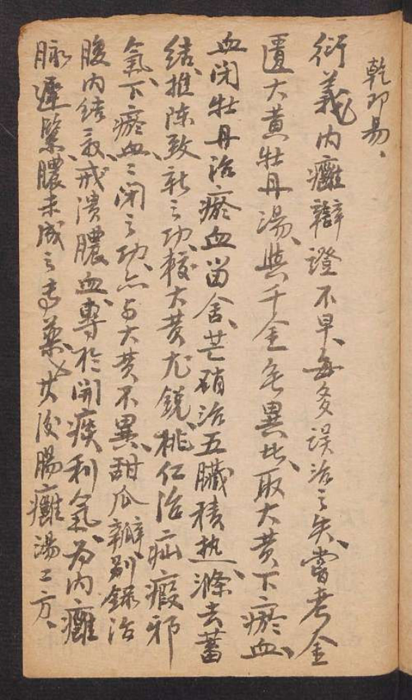
乾[疑:勿]易。
[疑:行]義内癰辯證不早，每多誤治之失。當考金匱大黃牡丹湯，與千金各異。此取大黃下瘀血，血閉，牡丹治瘀血留舍，芒硝治五臟積熱，去蓄結，推陳致新之功。較大黃尤銳，桃仁治血癖邪氣下瘀血，血閉之功，亦與大黃不異，甜瓜瓣別錄治腹内結，或成潰膿血，專於開痍利氣，為内癰脈遲緊，膿未成之主藥。故内腸癰湯一方。
本页为肠痈治法按语：强调内痈辨证宜早，对照《金匮》大黄牡丹汤与《千金》异同，逐味解释大黄、牡丹、芒硝、桃仁、瓜瓣下瘀、清热、开结之功。
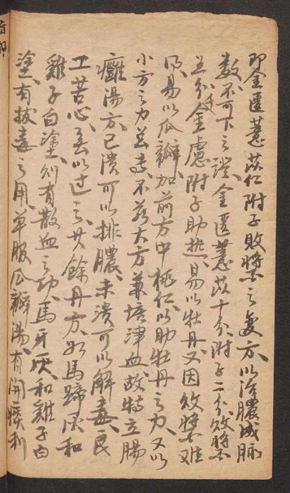
即金匱薏苡附子敗醬子之變方，以除膿成脈數不可下之證。金匱薏苡故十分，附子二分，敗醬五分，令全慮附子助熱，易以牡丹。又因敗醬難得，易以瓜瓣，加前方甲、桃仁以助牡丹之力。又以小方之力薄，未若大方兼培津血，故特立腸癰湯方。已潰可以排膿，未潰可以解毒。良工苦心，差以過之。其餘丹方，如馬蹄灰和雞子白塗，[疑:糾]有散血之功，馬蹄灰和雞子白塗，有拔毒之用。单服瓜瓣湯，有開痍利□。
本页续释方义：说明肠痈汤方由《金匮》薏苡附子败酱散化裁而来，因附子助热、败酱难得而作替换增损，并评马蹄灰外涂、瓜瓣汤等单方的作用。
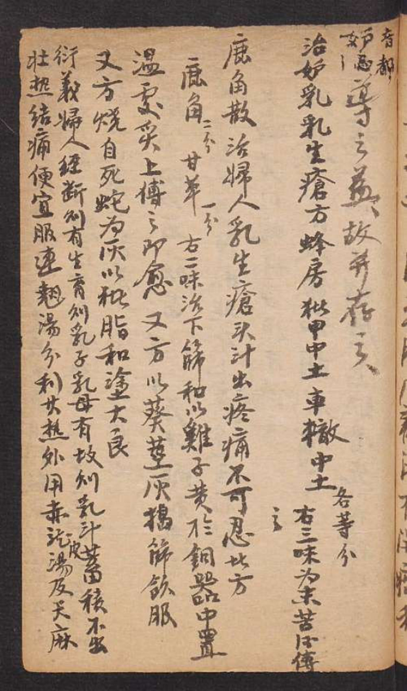
[疑:者都] [疑:鄭過]等之為，故并存之。
治婦人乳生瘡方：蜂房、松甲中土、車轍中土，各等分，右三味為末，苦酒傅[疑:傳]。
鹿角散，治婦人乳生瘡，乳汁出，疼痛不可忍。此方鹿角二分，甘草一分，右三味治下篩，和以雞子黃，於銅器中置溫炙，炙上傅之即愈。又方以藥莖灰，搗篩，飲服。
又方：燒自死蛇，為灰，以松脂和塗。大良。行數，婦人經斷，[疑:糾]有生青[疑:糾]乳子，乳母有故，[疑:糾]乳汁蓄積，不得出，壯熱，結痛，便宜服連翹湯，分利其熱。外用赤泥湯，及天麻□。
本页转入妇人乳疮：记治乳生疮方（蜂房、松甲中土、车辙中土为末苦酒调敷）、鹿角散，并附烧蛇灰调松脂外涂等法，末及乳汁蓄积发热结痛宜服连翘汤、外用等。
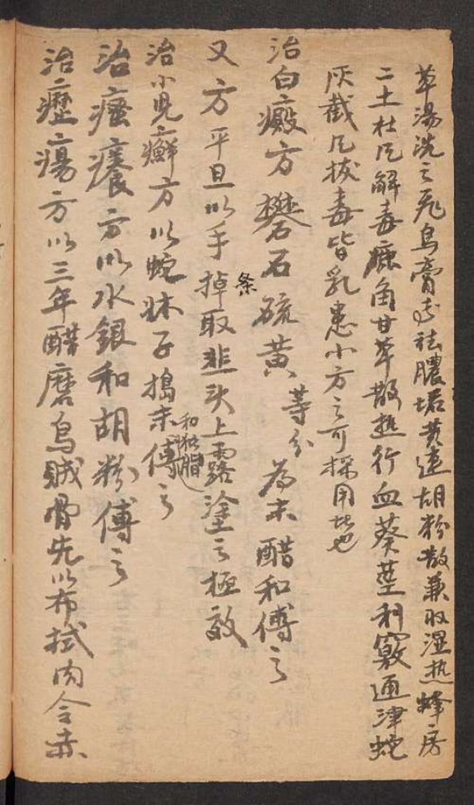
[接上页] 草汤洗之，[疑:免]乌膏[疑:亦]祛脓，[疑:胀]黄远，胡粉敷，兼取湿热，[疑:蚁]房、二土、杜[疑:凡]解毒，藤角、甘草[疑:梢]并行血，葵茎利窍，通津[疑:地]。所载凡挟毒皆乳患，小方之可采用也。
治白癜方
矾石、硫黄等分，为末，醋和傅之。
又方
平旦以手[疑:掉]取韭[疑:叶]头上露，涂之极效。[小字]条
治小儿癣方
以蛇床子捣末傅之。[小字]和[疑:脂腊]
治瘰疬方
以水银和胡粉傅之。
治瘰疡方
以三年酢磨乌贼骨，先以布拭内令赤。
本页先承上页一段药性议论，继录皮肤外治诸方：治白癜方（矾石、硫黄醋调外敷）及韭叶露又方，小儿癣方（蛇床子），瘰疬方（水银、胡粉），瘰疡方（陈醋磨乌贼骨）。
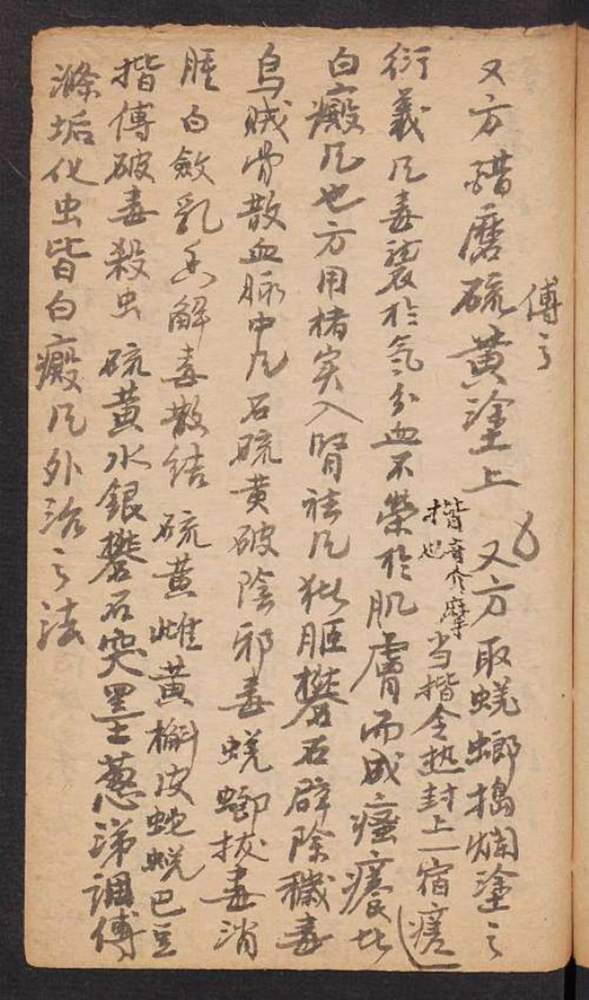
[接上页] 傅之。
又方
猪[疑:脂]磨硫黄涂上。
又方
取蜈蚣捣烂涂之。[小字][疑:指者全摩]，当[疑:楷]全热封上，一宿[疑:瘥]。
释义：凡毒发于气分，血不荣于肌肤，而成瘰疬[疑:疡]。白癜凡也。方用橘窠入肾，待凡[疑:杜]，矾石辟除秽毒，乌贼骨散血脉中凡，石硫黄破阴邪毒，蜈蚣拔毒消胀，白敛、乳[疑:香]解毒散结，硫黄、雌黄、[疑:榧]、蛇、蜈、巴豆，指傅破毒杀虫。硫黄、水银、矾石、[疑:吴茱萸]、葱涕调傅，[疑:瘰垢]化虫，皆白癜凡外治之法。
本页续白癜/瘰疬类外治：猪脂磨硫黄方、蜈蚣捣烂外涂方，后大半页为释义，逐味解说矾石、硫黄、乌贼骨、蜈蚣、白敛、乳香、水银等在此类病外治中的用意。
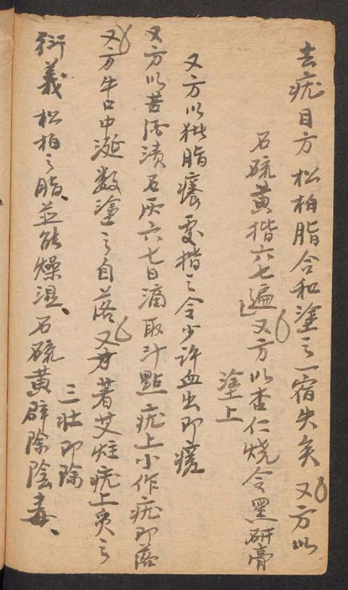
去疣目方
松柏脂合和涂之，一宿失矣。
又方
以石硫黄搗[疑:穴]七遍。
又方
以杏仁烧令黑，研膏涂上。
又方
以桃脂[疑:疡]、[疑:炙]楷[疑:合]，含少许，血出即瘥。
又方
以苦[疑:酒]清石灰，六七日滴取汁，点疣上，小作疣即落。
又方
牛口中涎数涂之，自落。
又方
若艾炷疣上灸之，三壮即落。
释义：松柏之脂并能燥湿，石硫黄辟除阴毒。
本页专录去疣目（疣子）诸方：松柏脂、石硫黄、烧杏仁膏、桃脂、石灰汁点疣、牛口涎涂、艾炷灸等，末附松柏脂、硫黄药性释义。
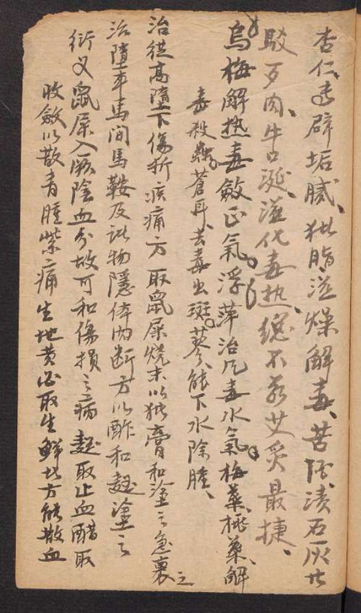
[接上页释义] 杏仁去辟垢腻，松脂溢燥解毒，苦[疑:酒]清石灰[疑:收]，败五肉，牛口涎液化毒热，从不若艾灸最捷。乌梅解热毒，敛正气，浮萍治凡毒水气，梅叶、桃叶解毒杀虫，苍耳去毒出斑，[疑:葵]能下水除肿。
治从高堕下伤折疼痛方
取鼠[疑:屎]烧末，以松膏和涂之，急裹之。
治堕[疑:来]马间、马鞍及诸物隐[疑:侍]断方
以酢和[疑:糁]涂之。
释义：又鼠[疑:屎]入伤阴血分，故可和伤损之病。[疑:糁]取止血，酢取收敛，以散者肿紫之痛。生地黄必取生鲜，此方能散血。
本页上半续去疣诸药的释义（杏仁、松脂、乌梅、浮萍、梅叶、桃叶、苍耳等），下半转入跌打损伤：治从高堕下伤折疼痛方、治堕马伤方，末附鼠屎、醋、生地黄等释义。
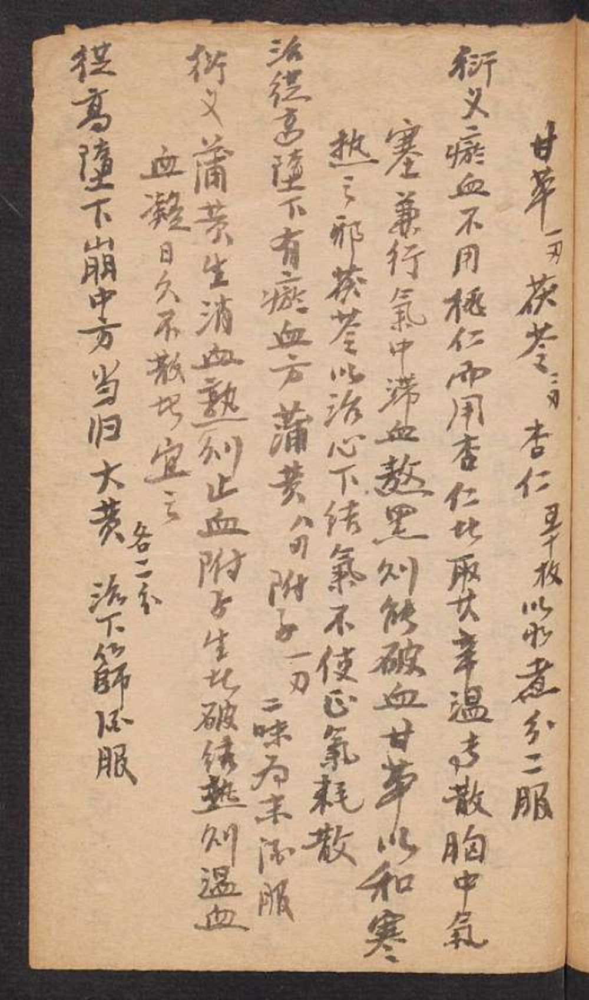
[接上页方] 甘草一两，茯苓[疑:二两]，杏仁五十枚，以水煮，分二服。
释义：又瘀血不用桃仁而用杏仁，此取其温走，散胸中气塞，兼行气中滞血，数里则终破血。甘草以和寒热之邪，茯苓以活心下结气，不使心气耗散。
治从高堕下有瘀血方
蒲黄[疑:分]、附子一[疑:刀]，三味为末，酒服。
释义：又蒲黄生消血，熟则止血；附子生比破[疑:积]，热则温血。血凝日久不散，故宜之。[小字]各二[疑:分]
从高堕下崩中方
当归、大黄，治下[疑:节]，[疑:酒]服。
本页续堕伤瘀血内服方：甘草、茯苓、杏仁煮服方及释义，治从高堕下有瘀血方（蒲黄、附子等酒服），从高堕下崩中方（当归、大黄）。
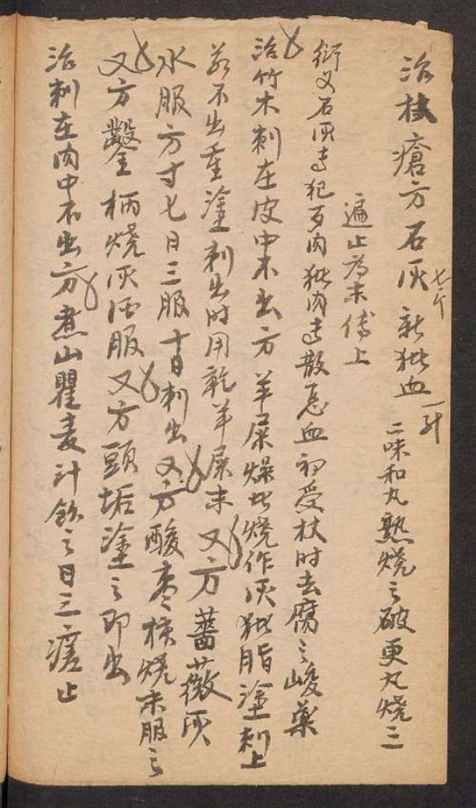
治杖疮方
石灰、新猪血一升，三味和丸，熟烧之，破更丸烧三遍，止为末，傅上。[小字]七个
释义：又石灰去[疑:杞]五肉，热肉走散，急血初受杖时，去瘀之峻药。
治竹木刺在皮中不出方
羊[疑:屎]燥[疑:粪]烧作灰，松脂涂刺上。若不出，重涂，利出时用新羊[疑:屎]末。
又方
蔷薇灰水服，方寸[疑:匕]，七日三服，自刺出。
又方
酸枣核烧末服之。
又方
[疑:凿]金柄烧灰，酒服。
又方
头垢涂之，即出。
治刺在肉中不出方
煮山瞿麦汁饮之，日三，瘥止。
本页录治杖疮方（石灰、新猪血制丸烧研外敷）及释义，后专录竹木刺入皮肉不出诸方：羊屎灰加松脂、蔷薇灰、酸枣核末、金柄灰、头垢外涂，及治刺在肉中方（瞿麦汁内服）。
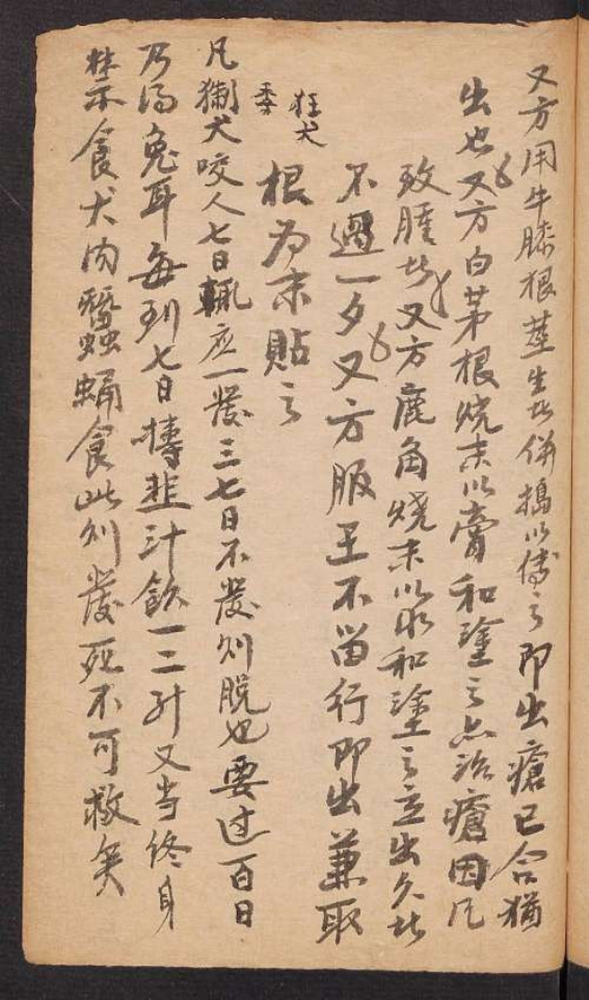
又方
用牛膝根茎生[疑:捣]傅之，即出，疮已合犹出也。
又方
白芷根烧末，以膏和涂之，出疮因凡致肿也。
又方
鹿角烧末，以水和涂之，立出，久也不过一夕。
又方
服王不留行，即出，兼取[疑:狂犬]根为末贴之。[小字]季
凡猎犬咬人，七日辄应一发，三七日不发则脱也。要过百日，乃忌兔耳。每到七日，捣韭汁饮三升。又当终身禁未食犬肉、[疑:螳螂]蛹，食此则发，死不可救矣。
本页前半续刺不出诸又方（牛膝、白芷根、鹿角、王不留行等），后半转入狂犬咬伤的发作规律与禁忌记载：谓七日一发、须过百日、每七日饮韭汁、终身禁食某些食物等民间说法。
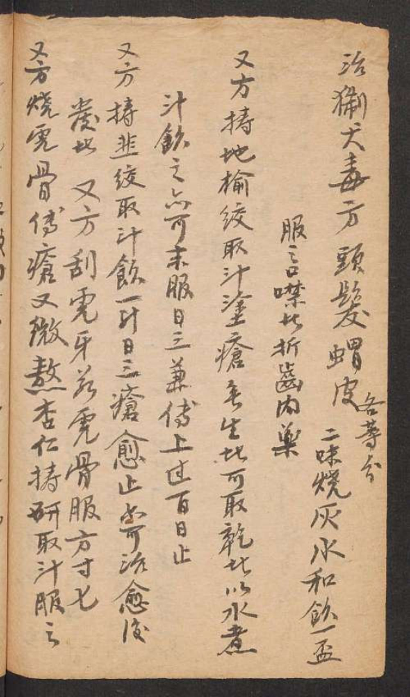
治猎犬毒方
头发、[疑:胃]皮各等分，二味烧灰，水和饮一盏。服之，[疑:嚼]折齿内药。
又方
捣地榆绞取汁涂疮，毒[疑:尽]生地可取，乾地以水煮汁饮之，亦可末服，日三，兼傅上，过百日止。
又方
捣韭绞取汁饮一升，日三，疮愈止，出可治愈后[疑:处]也。
又方
刮兔牙、[疑:充]骨服，方寸七。
又方
烧兔骨傅疮，又[疑:微]数杏仁捣研，取汁服之。
本页专录治猎犬毒（狂犬咬伤）诸方：头发与胃皮烧灰内服、地榆汁/生地黄、韭汁、兔牙兔骨、杏仁汁等，并见「过百日止」的日程说法。
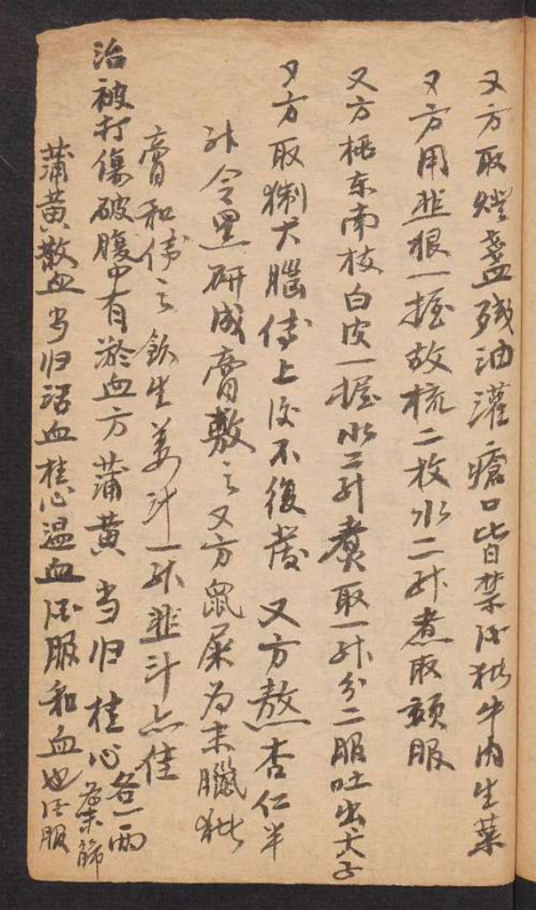
又方
取[疑:灶]盏残油灌疮口，皆禁[疑:食]热牛肉、生菜。
又方
用韭根一握、故梳二枚，水二升，煮取[疑:一升]服。
又方
桃东南枝白皮一握，[疑:水]三升，枣取一升，分二服，吐出犬子。
又方
取猎犬脑傅上，后不复发。
又方
数杏仁半[疑:升]，含[疑:黑]研成膏敷之。
又方
鼠屎为末，[疑:脑]、[疑:猪]膏和傅之。[小字]余生姜汁一杯，韭汁[疑:上]佳。
治被打伤破腹中有淤血方
蒲黄、当归、桂心，温血[疑:同]服，和血[疑:也]，酒服。[小字]各一两，[疑:为末筛]
蒲黄散血，[疑:当]归活血，桂心温血，[疑:同]服和血也，酒服。
本页续狂犬咬伤诸又方（残油灌疮、韭根故梳、桃枝白皮、猎犬脑、杏仁膏、鼠屎猪膏等），末转治被打伤破腹中有淤血方（蒲黄、当归、桂心酒服）并附三药释义。
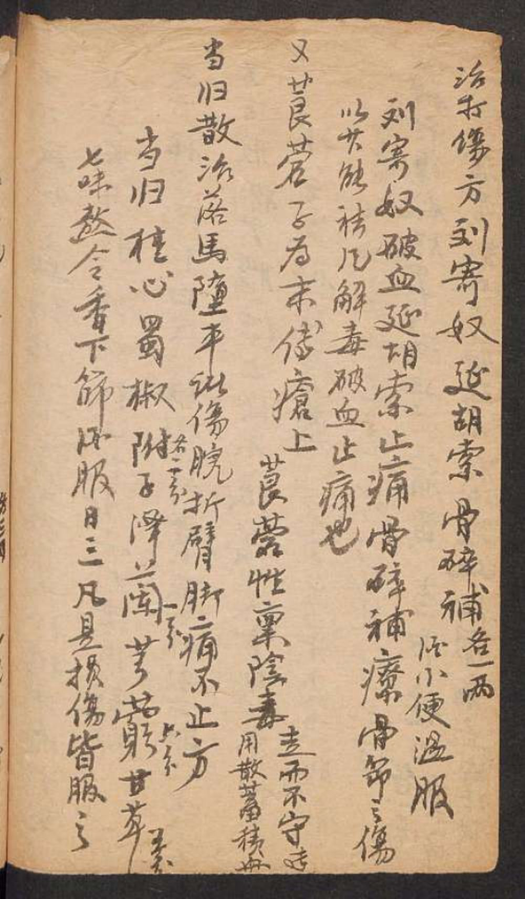
治打傷方
劉寄奴破血，延胡索止痛，骨碎補療骨節之傷，[疑:佐以]便溫服。以此能祛凡解毒，破血止痛也。
又：萱[疑:莨]菪子為末，傅瘡上。萱[疑:莨]菪性稟陰毒，走而不守，用散蓄[疑:積]無□。
當歸散，治落馬墜車諸傷，腕折臂斷痛不止方：
當歸、桂心、蜀椒、附子、澤蘭、芎藭、甘草，七味熬含香，下篩，酒服，日三。凡是損傷皆服之。
本页为跌打损伤方：先述刘寄奴、延胡索、骨碎补等单味功效，次载莨菪子末外敷，再载当归散治落马坠车、腕折臂断疼痛。
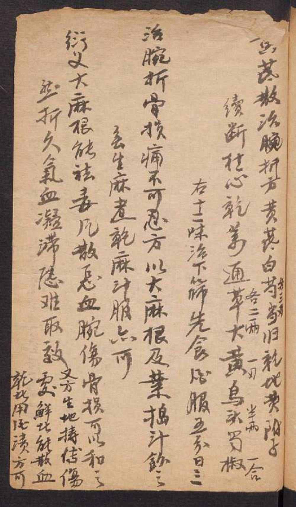
[疑:白芨]散，治腕折方：黃芪、白芍、當歸、乳香、黃柏子，續斷、[疑:杜仲]、乳香、通草、大黃、烏頭、蜀椒，各三兩，[疑:一合]。右十二味，治下篩，先含水服，五分，日三。
治腕折骨損痛不可忍方：以大麻根及葉，搗汁飲之。云生麻煮乾麻汁服，亦可。
餘又：大麻根能祛毒，凡被惡血腕傷骨損，可以和之。並折久氣血凝滯，隱痺取效。另方：生地搗傅傷，乾者用此漬，方可用。
本页续跌打骨折方：载一散方治腕折，列黄芪、白芍、当归等多味及服法；又载大麻根叶捣汁治腕折骨损剧痛，并附生地外敷。
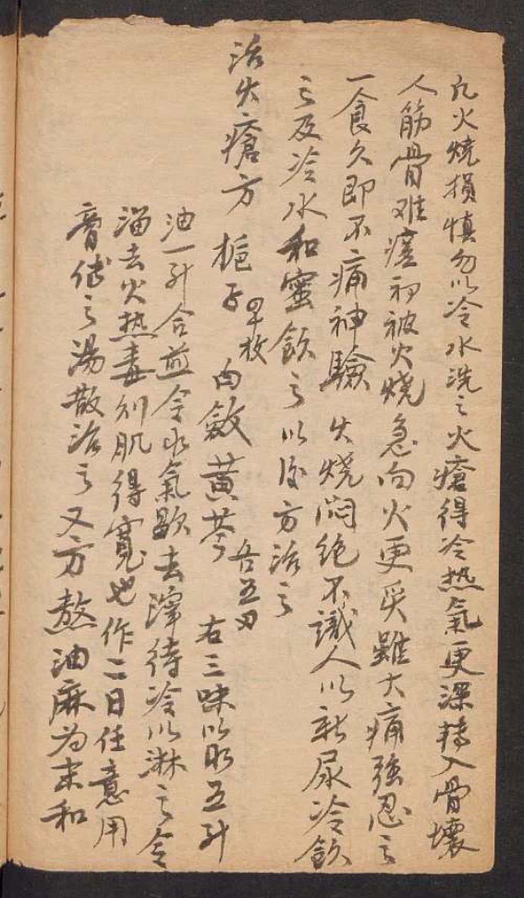
凡火燒損，慎勿以冷水洗之。火瘡得冷，熱氣更深，接入骨壞人筋骨，難痊。初被火燒，急向火更炙，雖大痛強忍之，一食久即不痛，神驗。火燒悶絕不識人，以新尿冷飲之，及冷水和蜜飲之，以此方治之。
治火瘡方
梔子、[疑:皂枚]、白斂、黃芩，各五兩。右三味，以水五升，油一升，合煎，令水氣歇，去滓，待冷，以淋之，令溜去火熱毒，則肌得寬也。作二日，任意用。膏傅之，湯散治之。又方：熬油麻為末，和□。
本页为火烧伤处理：述忌冷水洗、初烧向火炙、新尿与蜜水冷饮等旧法，并载栀子、白蔹、黄芩等治火疮方及油麻末又方。此为古籍原文转录，不作处理建议。
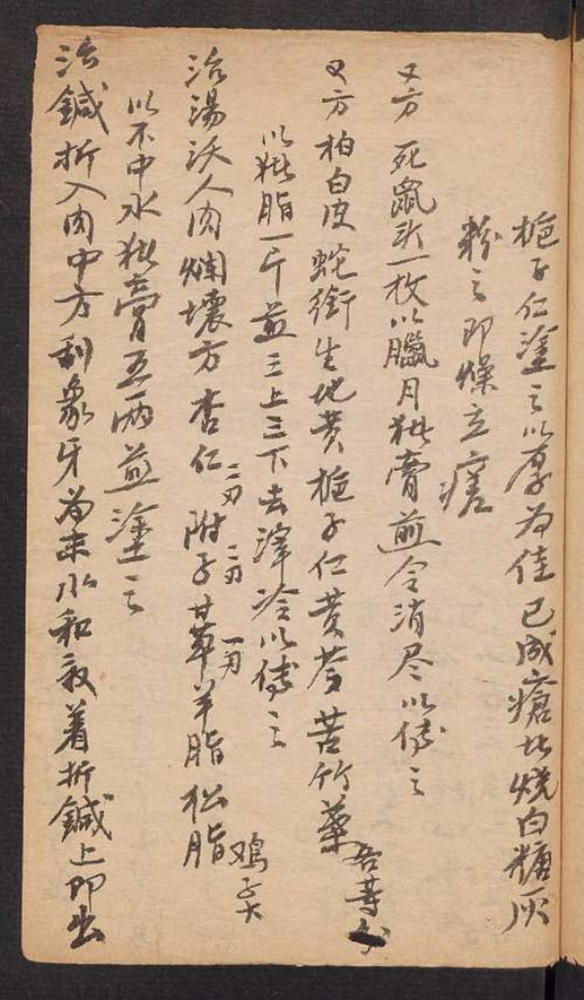
梔子仁塗之，以香為佳。已成瘡者，煉白糖灰粉之，即燥，主[疑:癰]。
又方：死鼠一枚，以臘月豬膏煎，令消盡，以傅之。
又方：柏白皮、蛇銜、生地黃、梔子仁、黃芩、苦竹葉，各等分。以豬脂一斤，鹽三上三下，去滓，冷以傅之。[疑:豬膏]
治湯沃人肉爛壞方：杏仁二兩，附子、甘草、羊脂、松脂、豬膏。以不中水松膏五兩，鹽塗之。
治鐵折入肉中方：刮象牙為末，小和，裹著折鐵上，即出。
本页续火疮、烫伤方：栀子仁外涂、死鼠猪膏煎敷、柏白皮等六味猪脂方、汤沃肉烂方，末载象牙末治铁刺折入肉中。
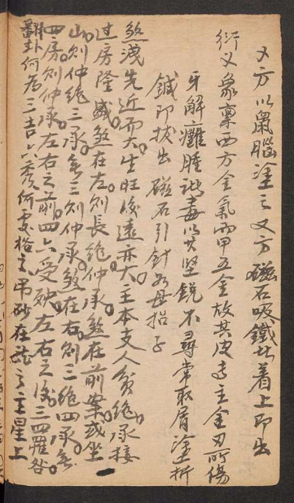
大方以鼠腦塗之。又方：磁石吸鐵，比著上即出。
行義象東西方，金氣而甲五，金故其皮走，主金刃所傷。身解[疑:癱]腫諸毒，以火堅銳，不尋常取屑塗抹，鐵即拔出。磁石引針，如母指子。
絲淺先近而太生旺，緣遠亦大。主本支人貧絕，承接過房隆盛，盤在左，則長絕；仲承盤在前，案或坐山，則仲絕三，承多三，則仲承致在右，則三絕；四承多四房，則仲承左右之，前四六受，絕左右之，[疑:寬]三四羅咎。翻卦何若三吉之，變何交格之，吊砂在訖之，主星上□。
本页前半续铁刺入肉方，述鼠脑涂、磁石吸铁；后半笔迹转入承嗣、过房与翻卦、吊砂等堪舆杂论，文意断续难通。
格之，吊水則向上掛之。坤水來主酉向，壬水來主坤向，巽水來主酉向，壬水來主癸向，[疑:艮]□。
河圖生成篇
天一生水，地六癸成之；地二生火，天七丙成之；天三生木，地八乙成之；地四生金，天九庚成之；天五生戊土，地十己成之。河圖順生。
河圖四局：上三局為本。乙水來立甲向，甲水來主己向，木局；丙水來主丁向，丁水來主丙向，火局；庚水來立辛向，辛水來主庚向，金局；壬水來主癸向，癸水來主壬向，水局。
主水來主癸向，癸水來主壬向，水局。坎向合水局，卯水來立艮向，艮水來主卯向，合木局。此三局水歸水垣，木歸木垣，一陰一陽，論美。
本页为堪舆河图部分：载河图生成数天一至地十的配属，及河图四局按来水、立向分木、火、金、水局的口诀。
揚巧番八卦，陰陽二宅各具。陰宅以本宮為伏位，桂[疑:卦]對宮起貪狼七星，依掌訣數得。故乾為伏位，則兌生氣，震天醫，坤絕體，坎遊魂，巽五鬼，艮福德，離絕命。訣曰：乾六天醫絕體遊，巽五鬼，艮福德，離絕[疑:命]。曲故文曲祿存，天父卦從此起也。若坤為伏位，即[疑:兌]地母卦，矣。訣曰：坤滿巽巨門，震廉，乾祿存，艮貪狼，武曲離文，坎破軍，巽也。凡正對者為生氣，即巨門；斜對者為絕體，即福宮，即祿存也；滿對者為遊魂，山煞即文曲也，五□。
本页为八宅堪舆：述阴宅以本宫为伏位、依掌诀起贪狼等七星配八宫的方法，并举乾、坤为伏位时生气、天医、绝命、五鬼等星的分布口诀。
對者為五鬼，即廉貞也。聯對者為福德，為延年，即武曲也。直對者為絕命，即破軍也。八卦各有本宮伏位，是為天地卦。而在八卦本宮伏位上，依次遞加生氣、天醫、絕體、遊魂、五鬼，近年絕命，是為巧番八卦。其天父地母二卦，則以天地卦內，乾坤本宮入山所得之星，依洛書九宮法，入中順飛得貪巨武輔，為吉。乾以兌為貪狼，坤以兌為武曲，故兌山天父卦，少貪入中宮，巨乾武坎，輔震，地母卦以武入中宮，輔震，離巨坎之類，若輔□。
本页续八宅法：释五鬼廉贞、延年武曲、绝命破军等对应关系，述巧番八卦的推排及天父、地母二卦依洛书九宫入中顺飞取星之法。
星卦，則本宮起輔，而以輔武破廉貪巨祿文，依掌訣數之，即得昔人湛淨陰淨陽番，來吉凶有准。若訣卦主宮卦例入式歌曰：生氣天醫專放水，依法斯為美。五鬼福德向中推，其餘生穴宜天父地母，前賢用效聽，願有[疑:和]惟有輔星，最玄之用。此卦為先，此陰宅訣，用之九星也。若夫陽宅，則異法，從本宮數起，依掌訣以伏絕天福六延五生為序。訣曰：正對生氣，斜對延[疑:年]，隔對六煞，聯對天，橫對五鬼，直對絕，互對禍害，□。
本页续星卦与阳宅法：述本宫起辅、依掌诀数辅武破廉贪巨禄文的星卦推法，及生气天医放水等阴宅诀，并转述阳宅从本宫数起的伏、绝、天、福等序与正对、斜对等口诀。页首有 X 记号。
重伏兼[疑:此]震宫为伏位，绝伦坎天医，坤福宅，艮六煞，巽延年，乾立鬼，离生气，内为坎、巽、离，合得生、天、延，三吉星。开门极[疑:和]盖震、巽、坎、离，右来四宅，故凡此四卦相遇皆吉。
乾、坤、艮、兑为西四宅，取用六煞，若东四宅而开西四宅之门，西四宅而开东四宅之[疑:门]，皆此忌也。或在城市不能转移，方用胜金卦，十字木星，左三右五，金水太阴，亦可开门放水，不拘。
讲东四宅与西四宅的区分：坎、巽、离、震为东四宅，乾、坤、艮、兑为西四宅，开门方位宜与宅卦相合，东西混开为忌；城市住宅不能改移时，提出用胜金卦等方法变通处理开门放水。
东西四宅，知若屋宇进数，九星吉凶，则以门上所得之星数起，以相生论层次。如坎宅开离门，乃是延年武曲金也，第二进为文曲水，第三进为贪狼木；又如乾宅开巽门，乃是祸害禄存土也，第二进为破军金，第三进为文曲水。凡起星吉，则生吉，凶则生凶，但于贪狼、文曲、廉贞，不论吉凶，皆生之。然淫凶生来仍生淫，吉生来仍生吉，大凡起星，屋宇分三进。
讲多进院落如何按门上九星逐进推算吉凶：以五行相生递推第二进、第三进的星，举坎宅开离门、乾宅开巽门为例，并说明贪狼、文曲、廉贞三步的相生规则。
以上方咸星布，其未进皆右伏位，为辅弼星，不在相生之例。若在九进以上，则起双星。如廉贞火生祸存土，又生巨门土，巨门土生成金，又生破军金之类。六看起星吉，则先吉后凶，起星凶，则先凶后吉。又凡门若旁开者，则以门就向起星。如震宅门生气离，门即以离门横对兑向，为五鬼起廉贞火之类。凡遇吉星宜高大，发越山星宜依伏。
续讲进数推星的补充规则：未进处以伏位辅弼星论，九进以上起双星；旁开之门按门的朝向起星；末句讲吉星宜高大、山星依伏位的布局原则。
亦不宜缺陷，此阳宅所遇之九星也。
直看生气、天医、绝体、游魂、五鬼、福德、绝命、本宫。
乾 离 艮 巽 坎 坤 震 兑
兑 震 坤 坎 巽 艮 生 离 乾
震 兑 坎 坤 艮 巽 天 乾 离
坤 坎 兑 震 离 乾 绝 巽 艮
坎 坤 震 兑 乾 离 游 巽 坤
巽 艮 离 乾 兑 震 [疑:孟]坤 坎 福
艮 巽 乾 离 震 兑 命 兑 震
离 乾 巽 艮 坤 坎 本 震 兑
注：本页为八卦配九星的对照表，原页以行列排布，上录尽量按原行次排列，个别字漫漶，如「游」下之字、「福」「命」「本」等行首字位置与原表对应关系存疑。
一页图表：列出阳宅九星名目（生气、天医、绝体、游魂、五鬼、福德、绝命、本宫等），并以八卦乾坤震巽坎离艮兑排列成对照表，供查某宅遇某星之用；卷首一句说阳宅亦不宜缺陷。
认卦爻祖不动不变，为卦之休，至变卦方有用。诀曰：正对生气天医，横斜为绝体，隔游魂互对，五鬼联对福，直对绝命，本辅在此，本宫卦也。至番卦，则七位连加，以生气加本宫，即为生气卦也；以天医加本宫，即为天医卦。如兑宫能为生气，番乾于本宫，依掌诀上六顺逆数去，则兑番作生气，则为生气卦矣。离为天医，番离于本宫，依掌诀数，则是番作天医，而为天医卦矣。绝体、游魂、五鬼、福德、绝命等卦，仿此。八山同例，八用法者，卦例入式歌，见前不赘。外有天父卦、地卦。
讲「番卦」掌诀：以本宫为基，将生气、天医、绝命等星依次加临推得各卦的方法，举兑宫、离宫为例，其余诸星仿此；并提及八山同例及天父卦、地母卦，引向下一页。
乾卦而取地母卦，挂天地卦，坤卦而取皆以八山所得之星，入中顺飞九宫，起诀见前。昔人云：乾天地乎动，故向水象，志范越历，取推以吉凶有验。坤地也，主乎静，故坐山法焉。杨曾用之，六秀山水盖出乎此。如按天父卦步水，多用本宫所行之星，以定吉凶。如兑山一步起贪狼，震山一步起巨门之类，未尝更用兑宫地母卦也。秀太于本宫取之，若用兑宫，则反不合阴阳矣。又如生气、天医与七卦，玄若有取用，然既以天父卦。
讲天父卦与地母卦的取用：乾取地母、坤取天父，以八山所得之星入中顺飞九宫；并辨步水时多用本宫所行之星定吉凶，不可错用地母卦，否则不合阴阳。
步水以地母卦定穴，而又有辅星卦，论净阴净阳，则此七卦皆地卦矣。愚故以兑宫卦，但存其说，不复别图，应不致踵卦例误人之咎云。
三合九星
贪、巨、禄、文、廉、武、破、辅八星，于二山西顺行三酉，例云：乾甲离壬寅戌山，坤主乙上起贪狼。坤乙坎癸申辰山，艮丙辛上起贪狼。艮丙震庚亥未山，巽庚癸上起贪狼。巽辛兑丁巳丑，乾甲子，上起贪狼。诀曰：收山出煞有奇功，破禄廉文要坐空，贪巨武辅收入穴，何愁大地不相逢。
前半总结辅星卦与净阴净阳之说，作者自注只存其说不另绘图。后半新起「三合九星」一节，列贪狼等八星在二十四山上的起例口诀，以及「收山出煞」一首诀语。
遇按此九星，盖以四正卦纳甲化气之生旺墓起贪狼也。其乾附于离，坤附于坎，坎以乾坤之先天在离坎也。艮附于震，巽附于兑，皆以震兑之先天在艮巽。其如离纳己，己之化气土，土生于坤申，旺于壬子，墓于辰，故坤壬乙上起贪狼也。坎纳戊，戊之化气火，火生于艮寅，旺于丙午，墓于辛戌，故艮丙辛上起贪狼也。此方改载阴阳双山五行二十四向分金，捷径二十四局多诀。
双山五行二十四向分金
解释三合九星为何按纳甲化气的生、旺、墓三合起贪狼，举离纳己、坎纳戊两例说明。页末引出下一主题：双山五行二十四向分金，为第63页的表格作题。
双山五行二十四向分金（承上页题）
立巽巳向，用丁巳、丁亥，辛巳、辛亥分金。
立丙午向，用丙午、丙子，庚子、庚午分金。
立丁未向，用丁未、丁丑，辛未、辛丑分金。
立坤申向，用丙申、丙寅，庚申、庚寅分金。
立庚酉向，用[疑:丙]酉、丁卯，辛酉、辛卯分金。
立辛戌向，用丙戌、丙辰，庚戌、庚辰分金。
立乾亥向，用丁亥、丁巳，辛亥、辛巳分金。
立[疑:癸]丑向，用丁丑、丁未，[疑:庚]子、[疑:庚]午分金。
立艮寅向，用丙寅、丙申，庚寅、庚申分金。
立甲卯向，用丁卯、丁酉，辛卯、辛酉分金。
立乙辰向，用[疑:丙]辰、[疑:丙]戌，庚辰、庚戌分金。
立壬子向，用丙子、丙午，庚子、庚午分金。
注：本页为表格体，字迹较工整；少数干支因连笔存疑，已以 [疑:] 标出。
二十四向分金表：逐向列出立向时可用的分金干支组合（如立巽巳向用丁巳丁亥、辛巳辛亥），是罗盘定向取分金的速查表。
声母二十四，勾得□，力勒格客额□。
泊泼磨缚我，采托诺将，各可我火基。勾父[疑:门]匚万分去，了分将，[疑:化]万冗厂[疑:北]。其尼希之尺，师日自此私儿，人广丁出，行尸月尸[疑:专]么儿。
阿韵母十二，我也[疑:爱]厄敖欧安恩昂哼，王亡世[疑:两]么又马[疑:百]九[疑:乙]哼，何为我也。
己[疑:衣]五雨，介母三，一义山□。
注：本页草书极甚，多字连笔成团、且有类音标的记音符号，上录仅为可辨部分的拼合，缺字甚多，不敢补造。
一页记音杂抄：题及「声母二十四」「韵母十二」「介母三」，罗列若干声母、韵母字例，疑与等韵或注音识字有关。因草书漫漶，本页为全批辨认最难的一页，具体体系待结合上下文再考。
向上五行
向上者，以向上起长生也。如立寅、申、巳、亥自生向，即从向上起长生；如立子、午、卯、酉自旺向，即从向上起帝旺。向上起长生，本局水口止以上向作主，或衰方禄存，或沐浴或胎方，俱为借库消水，不论归正库不归正库。
借马法与借禄同。借禄司[疑:借]马法与借禄同：丙借巽为禄马场，主借乾为禄马，乡[疑:甲]借艮为丙借巽，寅借坤为禄马，传[疑:寅]借坤为[疑:禄]马[疑:生]。禄马借[疑:时]，阳内裁绕阴统为死脉，要阴阳吸作用，阳来须受阴，阳穴下砂不护，莫言[疑:就]。水不上堂，休问穴下砂不护，莫言[疑:就]。
讲「向上五行」：按向上起长生、帝旺推水法，及借库消水的用法（衰方、沐浴、胎方借库不论正库）；又讲借马法与借禄同例，列各向借禄马的方位，末谈阴阳配合与砂水关系。